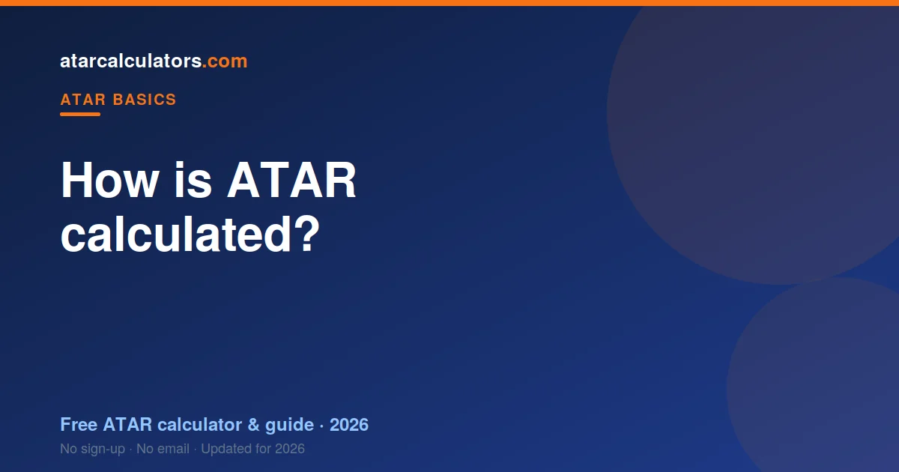

Your ATAR is calculated in three steps. First, your result in each subject is scaled to account for how strong the group taking it was. Second, your best scaled results are added into an aggregate. Third, that aggregate is ranked against your whole age group and turned into a percentile from 0.00 to 99.95. The details differ a little by state, but the three steps are the same everywhere.
Key takeaways
- Your ATAR comes from scaled results, not raw marks or a simple average.
- Scaling adjusts each subject so the same result means the same thing across subjects.
- Your best scaled scores are combined into an aggregate; weaker subjects count for less or not at all.
- The aggregate is ranked against your age group and turned into your ATAR.
- Most states require an English subject to count towards your ATAR.
- You cannot “game” scaling — a strong result in any subject beats a weak one in a high-scaling subject.
- Each state’s admissions centre does the sums, but the final ATAR means the same nationally.

The full pipeline: from classroom to ATAR
The three steps in the summary above are the heart of the ATAR, but they sit inside a longer process that starts in your classroom and ends with a number on your screen in December. Seeing the whole pipeline makes each step easier to understand.
- Assessment. Through Year 12, and in some states Year 11, you complete school assessment tasks and, in most subjects, external exams or assessments.
- Subject results. Your curriculum authority combines your school assessment and external assessment into a result for each subject. School marks are usually moderated first, so that marks from different schools can be compared.
- Scaling. Your admissions centre adjusts each subject’s results onto a common scale, based on how the students in that subject performed across all their subjects.
- Aggregate. Your best scaled results are combined under your state’s rules, with any compulsory subjects, increments or bonuses applied.
- Rank. Aggregates are ranked, and your position relative to your age group in your state is reported as your ATAR, from 0.00 to 99.95 in steps of 0.05.
- Selection rank. When you apply for a course, any adjustment factors you are eligible for are added to your ATAR to create your selection rank for that course.
Two different kinds of organisation run this pipeline. Curriculum and assessment authorities, such as NESA in NSW, the VCAA in Victoria, the QCAA in Queensland, SCSA in Western Australia and the SACE Board in South Australia, handle steps 1 and 2. Admissions centres, such as UAC, VTAC, QTAC, TISC and SATAC, handle steps 3 to 5, and universities apply step 6.
| Stage | Who does it | What comes out |
|---|---|---|
| Assessment | Your school and the curriculum authority | School marks and exam marks |
| Subject results | Curriculum authority | A result for each subject, such as an HSC mark or VCE study score |
| Scaling | Admissions centre | A scaled result for each subject |
| Aggregate | Admissions centre | A total of your counted scaled results |
| Rank | Admissions centre | Your ATAR |
| Selection rank | Universities, via the admissions centre | A rank for each course, including adjustments |
Before scaling: how school marks are moderated
Before scaling can happen, each subject needs a result that is comparable across schools. That is the job of moderation, a step that many students never hear about but which affects almost everyone.
The problem moderation solves
Schools set their own assessment tasks and mark them themselves. One school’s tasks may be harder than another’s, and one school’s teachers may mark more generously. A school mark of 85 at one school does not necessarily represent the same achievement as 85 at another. Moderation adjusts school marks so that they can be compared fairly.
How it works in the states with exams
In NSW, Victoria and Western Australia, moderation uses the external exam results of each school’s group of students. Broadly, the school marks are adjusted so that they match the spread and level of the same group’s exam results. The order of students within the school group is generally kept, but the size of the marks and the gaps between them can change. In NSW, the moderated assessment mark is then combined equally with the exam mark to produce the HSC mark. In Western Australia, the moderated school mark is averaged with the exam mark to produce a combined score.
Queensland’s approach
In Queensland, internal assessment in General subjects is quality assured through endorsement and confirmation. The QCAA endorses assessment instruments before they are used and confirms schools’ marks by reviewing samples of student work. The QCAA has stated that external assessment results do not scale internal assessment results. The final subject result combines confirmed internal marks with the external assessment, which contributes 25 per cent in most subjects and 50 per cent in mathematics and science subjects.
South Australia and the NT
In South Australia and the NT, school assessment makes up 70 per cent of each Stage 2 subject and external assessment the other 30 per cent. School assessment is moderated to make sure grading is consistent with each subject’s performance standards across schools.
What moderation means for you
Because moderation usually preserves your order within your school group, your rank in your class matters. If you are near the top of your group in a subject, moderation will generally keep you there. It also explains why raw school marks can change before they reach your ATAR, and why any estimate built on raw school marks is approximate.
Step 1: Your subjects are scaled
The first step is scaling. Every subject you take is adjusted so that a result in one subject is worth the same as the same result in another. This is done by the admissions centre, not your school.
Scaling works by looking at how the students in a subject perform across all of their subjects. If the group taking a subject is strong overall, that subject scales up. If the group is broader, it scales down. Your own ranking within the subject never changes — scaling only changes how your score counts towards your ATAR.
A quick example: a raw mark of 40 in a subject with a very strong cohort might scale up to 44, while the same raw 40 in a broad-entry subject might scale down to 36. Same raw mark, different scaled value, because the competition differs.
Scaling in plain language
Think of each subject as a race run on a different track. Some tracks are full of very fast runners; others have a wider mix. Finishing fifth on the first track is a stronger performance than finishing fifth on the second. Scaling is the process that recognises this, so that a strong finish against strong competition counts accordingly.
The way scaling measures the strength of each track is by looking at how its runners performed on the other tracks they ran on. If the students in a subject did well across their other subjects, the subject’s cohort is judged to be strong, and its results are placed relatively high on the common scale.
Scaling keeps your order within the subject
Scaling never changes the order of students within a subject. If you are ahead of another student in Chemistry before scaling, you are still ahead after scaling. What changes is where the whole group’s results sit relative to other subjects.
Scaling differs along the range
Scaling is not a single number added to every student’s mark. It can lift results at the top of a subject more than in the middle, or the reverse, depending on how the students at each level performed in their other subjects. VTAC, for example, notes that the adjustment for a study is different at each study score. That is why the example above uses different scaled values for the same raw mark in different subjects, rather than a fixed bonus.
A note on the example figures
The figures in the example above, such as a raw 40 scaling to 44 in one subject and 36 in another, are illustrations of the principle. Real scaled values depend on the subject, the state, the year and the point in the range. Official scaling reports from admissions centres show the actual values for each year.
How scaling is actually done
You do not need to understand the mathematics of scaling to do well, but knowing the broad approach helps you trust the process and see through common myths.
Inter-subject comparison
Every state’s scaling compares subjects using the performance of the students who take them. Because students take several subjects, each student provides a link between the subjects they took. By looking at these links across tens of thousands of students, admissions centres can estimate how strong each subject’s cohort is relative to the others.
Iterative methods
Some states use iterative methods, which repeat a calculation until the results settle. QTAC, for example, describes its scaling as an iterative inter-subject process. In an iterative method, each subject’s scaled results are estimated, those estimates are used to recalculate the strength of every subject’s students, and the process repeats until the scaled values stop changing meaningfully.
Average marks scaling in Western Australia
TISC describes the scaling it uses for Western Australian ATAR courses as average marks scaling, applied after school marks have been moderated and combined with exam marks. The underlying idea is the same as elsewhere: each course’s results are placed on a common scale using information about how its students performed across their courses.
Scaling is recalculated every year
Because scaling depends on the students taking each subject, it is recalculated from scratch each year. Subjects with large, stable cohorts tend to scale in a similar way from year to year, while subjects with small or changing cohorts can move more. Our guide to how scaling changes from year to year explores this.
Special adjustments
In some states, policy adjustments are added to the scaling process. In Victoria, VTAC applies a policy adjustment to the scaling of languages. These adjustments are part of the published rules and apply equally to all students taking the relevant studies.
What scaling does not do
- It does not reward a subject for difficult content.
- It does not penalise a subject for being popular.
- It does not change your order within a subject.
- It does not add a fixed number of points to every student.
- It does not depend on which school you attend.
Our guides to ATAR scaling, scaling myths and reading a scaling report go further.
A scaling example in slow motion
Scaling can feel abstract, so here is a simplified illustration of the reasoning behind it. Real scaling uses far more data and more sophisticated methods, but the logic is the same.
Two subjects, overlapping students
Imagine two subjects, Subject A and Subject B. Many students take both, along with several other subjects. In their raw marks, the average in Subject A is 65 and the average in Subject B is 70. On raw marks alone, Subject B looks like the place where students do better.
Looking at the students’ other results
Now look at how each group performs in their other subjects. Suppose the students taking Subject A have, on average, stronger results across their other subjects than the students taking Subject B. That suggests Subject A’s students are a stronger group overall, and that its lower raw average reflects tougher competition or tougher marking, not weaker students.
Placing both subjects on one scale
Scaling uses that information to place both subjects on a common scale. Subject A’s results are moved relatively higher, and Subject B’s relatively lower, so that a scaled result in either subject represents a similar level of performance relative to the whole student population. After scaling, a strong student in Subject A is not disadvantaged for choosing the subject with the lower raw average.
Why it repeats
Every subject is linked to others through the students who take them, so adjusting one subject affects the comparisons for the rest. Iterative methods repeat the adjustment across all subjects until the scaled values settle. That is the idea behind descriptions such as QTAC’s iterative inter-subject scaling.
What stays the same
Throughout this process, the order of students within each subject never changes. A student who finished ahead of another in Subject A remains ahead after scaling. Scaling only changes where each subject’s results sit relative to other subjects.
Why scaling exists
Scaling exists to be fair. Without it, a student who took easier subjects would have an advantage over one who took harder, more competitive subjects. Scaling removes that advantage, so no student is better or worse off simply because of the subjects they chose.
This is why the idea that “hard subjects scale up” is only half true. A subject scales up because the students in it are strong, not because the content is difficult. You can explore any subject’s real numbers with our HSC and VCE scaling calculators.
The practical lesson is freeing: you do not have to chase “high-scaling” subjects. You just have to do well in whatever you take, because scaling rewards your position, not the subject name.
Why fairness requires scaling
Without scaling, the simplest way to raise an aggregate would be to choose subjects where high marks are easier to earn relative to the competition. Students would be pushed towards subjects for strategic reasons rather than interest or strength, and students who chose more competitive subjects would be disadvantaged. Scaling removes that incentive. Its goal is that two students who perform equally well relative to the whole student population end up with similar scaled results, whatever subjects they chose.
The trap of chasing scaling
Because scaling reflects the strength of each subject’s students, a subject that scales well is one where you face stronger competition. If you choose such a subject but finish in the lower part of its cohort, your scaled result may be lower than if you had finished near the top of a subject that scales more modestly. Scaling can help a student who is genuinely strong in a high-scaling subject, but it rarely rescues a weak result.
Using scaling sensibly
Scaling is best used as a tie-breaker. If you are equally strong in and equally interested in two subjects, and both meet your course requirements, the one that tends to scale better at your level of result may be the slightly better choice. Look at several years of data, at the point in the range where you expect to finish. Our guides to the highest scaling subjects and to maths and English scaling show what the data looks like.
Step 2: Your best scores form an aggregate
Once your subjects are scaled, your best scaled results are added together into a number called an aggregate. The exact rule depends on your state. Some states use your best four or five subjects; some add a portion of a fifth or sixth.
The key point is that your strongest subjects are what count. A weak subject often counts for less, or does not count at all, once your better results are in. This is why taking a safety subject you can do well in is a sound strategy.
Because only your best count, dropping a weak subject rarely helps as much as students think. If it was not going to make your top results anyway, it was already doing little to your aggregate.
How each state forms the aggregate
- NSW: scaled marks for your best 2 units of English plus your best 8 units from your remaining ATAR courses, with no more than 2 units of Category B courses. Scaled marks are out of 50 per unit, so the aggregate is out of 500.
- Victoria: your best scaled study score from the English group plus your next three best scaled study scores, which form your primary four, plus 10 per cent of your fifth and sixth scaled study scores or an eligible VET increment. The aggregate can range from zero to over 210.
- Queensland: the sum of your best five scaled results, from five General subjects or four General subjects plus one Applied subject or eligible VET qualification. The maximum is 500.
- Western Australia: the sum of your best four scaled scores, plus 10 per cent of your best scaled score in a language other than English, 10 per cent of your scaled score in Mathematics Methods and 10 per cent of your scaled score in Mathematics Specialist. The maximum is 430.
- South Australia and the NT: the scaled scores from your best 90 credits of eligible Stage 2 study, including at least 60 credits from 20-credit Tertiary Admission Subjects or valid pairs, and up to 20 credits of Recognised Studies. The aggregate is out of 90.
- Tasmania: from 2025, your best eligible Level 3 and Level 4 course scores over up to two years, each worth up to 15 points, totalling 60 to 75 points from four or five courses.
- ACT: your best three major scaled scores plus 60 per cent of your next major or minor.
Why “best” matters so much
Counting only your best results has two big effects. First, it protects you: a single weak subject does not necessarily drag your aggregate down, provided you have enough stronger results to replace it. Second, it focuses attention on the subjects that do count. If you know which of your subjects are likely to be in your best results, you can prioritise them, while still working steadily in the others in case your results change.
Partial contributions
In some states, results outside your main counted group still contribute a little. In Victoria, your fifth and sixth studies each contribute 10 per cent of their scaled scores. In Western Australia, bonuses for a language other than English and for advanced mathematics are added even if those courses are not among your best four. These partial contributions can make a small but real difference.
Special rules: combinations, limits and bonuses
Beyond the basic “best results” rules, each state has detailed rules that affect how particular combinations of subjects are treated. These rarely matter for most students, but when they do, they can change an aggregate noticeably.
NSW: categories and subject areas
In NSW, no more than 2 units of Category B courses can be included in the ATAR calculation, and eligibility requires at least 8 units of Category A courses. Eligibility also requires courses from at least four subject areas and at least three Board Developed courses of 2 units or more. UAC also has rules about how related courses, such as different levels of mathematics, are counted. NESA notes that English Studies only counts towards the ATAR if the student sits the optional HSC exam.
Victoria: mathematics and the English group
In Victoria, VTAC has rules about combinations of related studies. For example, if a student takes all three VCE mathematics studies, the lowest-scoring one can only contribute as an increment. The English group includes English, English as an Additional Language, English Language and Literature, and the best scaled score from the group counts in the primary four.
Queensland: one Applied subject or VET
In Queensland, only one Applied subject or one eligible VET qualification can be included in the best five. Students also need a C or better in an English subject to be eligible, but English only counts towards the TEA if it is among the best five.
Western Australia: unacceptable combinations
In Western Australia, some combinations of ATAR mathematics courses are subject to unacceptable combination rules, which limit how they can be counted. The bonuses for a language other than English and for Mathematics Methods and Mathematics Specialist apply regardless of whether those courses are in a student’s best four.
South Australia and the NT: credits and attempts
In South Australia and the NT, at least 60 of the 90 credits must come from 20-credit Tertiary Admission Subjects, or valid pairs of 10-credit subjects counted in place of a 20-credit subject. Up to 20 credits of Recognised Studies can be included in the flexible option, and the results used must come from a limited number of attempts.
If your subject combination is unusual, includes several related courses, or includes VET or Recognised Studies, check your admissions centre’s rules or ask your careers adviser how it will be counted.
How VET and other studies are counted
Vocational education and training can contribute to the ATAR in several states, within limits. The rules differ, so it is worth knowing how your state treats VET before you choose a course.
NSW
Some NSW VET courses are Board Developed courses that can count towards the ATAR. For these, students generally need to sit the optional HSC exam for their marks to contribute. Most such VET courses are Category B, so no more than 2 units of Category B courses can be included in the ATAR calculation.
Victoria
Scored VCE VET programs can count as studies in the ATAR calculation. Some VET programs without a study score can contribute an increment, worth 10 per cent of the student’s fourth primary scaled score, in place of a fifth or sixth study.
Queensland
One eligible VET qualification at Certificate III or higher can be one of the five results used to calculate the TEA, alongside four General subjects.
South Australia and the NT
VET can contribute as Recognised Studies, up to 20 credits in the flexible option. SATAC uses a scaled score for VET based on the average of the student’s first 70 credits of Tertiary Admission Subjects.
Western Australia
The Western Australian ATAR is calculated from scaled scores in ATAR courses. Vocational qualifications can provide other routes into some university courses, but they do not form part of the TEA itself.
If you are taking VET, ask your school how it will be treated in your state, and check whether the calculator you use models it correctly.
How common types of subject feed into the calculation
Different kinds of subject interact with the calculation in different ways. Knowing how your own subjects are treated helps you understand where your ATAR will come from.
English courses
English has a special role in most states. In NSW, your best 2 units of English must be included in your aggregate. In Victoria, your best scaled score from the English group must be in your primary four. In Queensland, a C or better in an English subject is required for eligibility, though English only counts if it is among your best five. When states offer several English courses, each is scaled according to its own cohort, so more demanding courses often scale more strongly, but only help students who perform well in them.
Mathematics courses
Mathematics is not compulsory for the ATAR in most states, but it interacts with the calculation in several ways. Advanced mathematics courses often attract strong cohorts and scale well at higher levels of result. Some states have rules about counting several mathematics courses together: in Victoria, if a student takes all three mathematics studies, the lowest can only contribute as an increment, and in Western Australia some mathematics combinations are subject to unacceptable combination rules. Western Australia also adds bonuses of 10 per cent of the scaled scores in Mathematics Methods and Mathematics Specialist to the TEA.
Sciences
Science subjects are scaled according to their cohorts like any other subject. In Queensland, mathematics and science subjects have external assessment worth 50 per cent of the result, compared with 25 per cent in most other General subjects, so the external assessment carries more weight in these subjects.
Humanities and social sciences
History, economics, legal studies, geography and similar subjects are scaled in the same way. Several attract strong cohorts and can contribute well to an aggregate. Their position varies by state and year.
Languages
Languages often have small cohorts, which can make their scaling less predictable from year to year. Some states treat languages specially: VTAC applies a policy adjustment to the scaling of languages in Victoria, and Western Australia adds 10 per cent of the best scaled score in a language other than English to the TEA. Several states offer separate language courses for students with different levels of background in a language.
Creative and performance subjects
Arts, music, drama and design subjects often include practical components, folios or major works alongside written assessment. They are scaled like any other subject, and students who perform very well in them can achieve high ATARs. Their practical components can make results harder to predict.
Extension subjects
In NSW, extension courses are usually 1 unit and reported out of 50. They count as single units within the best 10 units used for the ATAR. Extension courses often attract strong cohorts, but they also add workload.
Applied and vocational subjects
In Queensland, one Applied subject or eligible VET qualification can be included in the best five. In NSW, some VET courses can count if the optional HSC exam is sat, usually as Category B courses, with at most 2 units of Category B courses included. In Victoria, scored VCE VET programs can count as studies, and some unscored VET can contribute an increment. In South Australia and the NT, VET can contribute as Recognised Studies.
The English requirement
In most states, you must have a result in an English subject for it to count towards your ATAR. This does not mean English has to be one of your best subjects. It means at least one English study needs to be part of the mix.
The rules vary. Victoria, for example, requires an English study in the aggregate. Queensland requires you to complete an English subject to be eligible for an ATAR, though it only counts if it is among your best five. Other states have their own version.
Whatever your state, the message is the same: take English seriously, because you cannot avoid it. Aim for the best English result you can, even if it is not your favourite subject.
English in each state, in more detail
- NSW: your best 2 units of English must be included in your aggregate, even if they are among your lowest units. UAC’s own explanation shows that English counts whether or not it would otherwise be among your best results.
- Victoria: your best scaled study score from the English group must be one of your primary four.
- Queensland: you must achieve a C or better in an English subject to be eligible for an ATAR, but English is only included in your TEA if it is among your best five scaled results.
- Western Australia: English is not compulsory in the TEA, but universities generally require evidence of English competence for admission, which can be met through ATAR English or related courses.
- South Australia and the NT: the SACE and NTCET include literacy requirements, and your university aggregate is built from your best eligible credits.
- Tasmania and the ACT: certificate and tertiary entrance requirements apply, and your aggregate is built from your best eligible courses.
Why English gets special treatment
English is treated differently because strong communication skills are relevant to almost every university course. Requiring English in the aggregate, or as a condition of eligibility, ensures that every ATAR reflects some achievement in English.
Choosing your English course
Most states offer more than one English course. More demanding courses often scale more strongly, because they tend to attract students who are strong across all their subjects, but that only helps if you perform well in them. The right choice depends on where you are likely to rank, your interest and the requirements of courses you are considering. In NSW, for example, our guides to English Advanced and English Standard work through the trade-off.
Why English deserves real effort
In NSW and Victoria, a weak English result has a direct cost, because it must count. In Queensland, failing to reach a C in English removes ATAR eligibility altogether. Treat English as one of your most important subjects, and work on essay structure, close reading and timed writing throughout the year.
Five students, five rules in action
These short illustrative cases each show one rule of the calculation at work. The students are invented, and the figures are simplified.
Liam and the English rule
Liam, a NSW student, is strongest in mathematics and sciences, and his English Standard result is his weakest. He hoped English would be left out of his ATAR. Because NSW always includes the best 2 units of English, it counts. Liam’s aggregate would have been higher if he had put more time into English during the year, because every mark he gained there would have counted directly.
Ruby and the Category B limit
Ruby, also in NSW, takes two VET courses that are Category B, both with strong results, and sits the optional HSC exams so they can count. Only 2 units of Category B courses can be included in her ATAR, so one of the two courses cannot count, however strong its result. Her best 8 units outside English include one Category B course and her best Category A courses.
Ethan and three mathematics studies
Ethan, a Victorian student, takes General Mathematics, Mathematical Methods and Specialist Mathematics. Under VTAC’s rules, if a student takes all three, the lowest-scoring one can only contribute as an increment. Ethan’s two higher mathematics scores can be in his primary four, but his third contributes only 10 per cent.
Chloe and the WA bonus
Chloe, a Western Australian student, takes Mathematics Methods, but her best four scaled scores come from other courses. She assumed Methods would not affect her ATAR. In fact, 10 per cent of her Methods scaled score is added to her TEA as a bonus, so her Methods result raised her TEA after all.
Noah and the Queensland English requirement
Noah, a Queensland student, has strong results in five General subjects but struggles in English. Queensland requires a C or better in an English subject for ATAR eligibility, even though English only counts in the TEA if it is among the best five. Noah works hard in English to make sure he meets the requirement, while his other five subjects form his TEA.
What these cases show
Each case turns on a rule that is easy to overlook: compulsory English, limits on certain courses, rules for combinations, bonuses outside the best results and eligibility conditions. Checking your own state’s rules can prevent unpleasant surprises.
Step 3: Your aggregate becomes a rank
The final step turns your aggregate into your ATAR. Every student’s aggregate is placed in order, from highest to lowest. Your position in that order is your percentile rank, and that is your ATAR.
Because it is a rank, your ATAR depends on how everyone else did, not just on your own aggregate. The student with the highest aggregate receives 99.95. The rest are spread down the scale to 0.00, in steps of 0.05.
This is also why your ATAR can only be finalised after every student’s results are in. Until then, no one knows the exact order, so no one can know the exact ranks.
Who you are ranked against
The ATAR is designed to show your position relative to your whole age group in your state, not just relative to students who receive an ATAR. The age group includes young people who left school early or did not complete enough eligible subjects. Admissions centres use information about the age group to make sure each ATAR represents the same position in that population each year.
This has an important consequence. Because students who receive an ATAR tend to be stronger academically than the age group as a whole, the typical ATAR among recipients is well above 50. UAC reported a median ATAR of 70.75 in NSW in 2025, and VTAC reported an average of 69.52 in Victoria in 2024.
Many students share the top rank
The top ATAR of 99.95 is not reserved for a single student. It is the highest band on the scale, and every student whose position falls in that band receives it. In 2025, 53 students received 99.95 in NSW, 42 in Victoria and 37 in Queensland.
Each step is a band
ATARs are reported in steps of 0.05, giving 2,000 possible values from 0.00 to 99.95. Queensland’s admissions centre describes these as 2,000 bands. Each band represents roughly the same share of the age group, but the number of ATAR recipients in each band differs, because recipients are not spread evenly across the age group’s results.
Low ranks are not reported exactly
ATARs at the lower end of the scale are usually not reported as exact values. In Queensland, for example, ATARs of 30 or below are reported as “30.00 or less”. In South Australia, ATARs below 30.00 are not shown on the Tertiary Entrance Statement.
Why the ranking waits for every result
Because each ATAR depends on the whole set of aggregates, the ranking can only be done once every student’s results have been finalised, scaled and combined. That is the main reason ATARs are released a little after subject results in some states, and why no one can calculate an exact ATAR in advance.
How an aggregate becomes an ATAR, in more detail
The final step, turning aggregates into ATARs, is the part students see least of. Here is what happens in more detail.
Ranking the aggregates
Once every ATAR-eligible student’s aggregate has been calculated, the aggregates are placed in order. The task is then to express each student’s position as a rank relative to the whole age group in the state.
Relating the ranking to the age group
Not everyone in the age group receives an ATAR. Admissions centres take this into account so that each ATAR reflects a position in the whole age group, not just among ATAR recipients. That keeps the meaning of each ATAR stable from year to year, even when the share of students receiving an ATAR changes.
Reporting in bands
Positions are reported in bands of 0.05, from 0.00 to 99.95, giving 2,000 possible values. Students whose positions fall in the same band receive the same ATAR. Each band represents roughly the same share of the age group.
Conversion tables
The result of this process can be summarised as a table that shows which aggregates correspond to which ATARs in a particular year. Some admissions centres publish such a table: VTAC releases one on results day, and SATAC publishes a university aggregate to ATAR conversion table. These tables are what ATAR calculators use, from past years, to estimate your rank.
Why the same aggregate can mean different ATARs in different years
Because the conversion depends on the current year’s results, the same aggregate can correspond to a slightly different ATAR in different years. In large states, the differences are usually small, but they are one reason no one can know your exact ATAR before results are released.
Percentiles and the age group, explained
The last step of the calculation expresses your aggregate as a rank against your age group. Two ideas make this step clear.
Percentiles
A percentile describes the share of a group at or below a point. If you are at the 80th percentile, about 80 per cent of the group is at or below your position. The ATAR works in a similar way: an ATAR of 80 means you performed better than about 80 per cent of your age group.
The age group
The group the ATAR compares you with is your age group in your state, including people who do not receive an ATAR. Students who receive an ATAR tend to be stronger academically than the age group as a whole, so the typical ATAR among recipients is around 70 rather than 50. In NSW in 2025, UAC reported a median of 70.75, and about 34.6 per cent of recipients had an ATAR of 80 or above, even though 80 represents the top 20 per cent of the age group.
Why this design?
Anchoring the ATAR to the age group gives it a stable meaning from year to year. If it were based only on recipients, its meaning would change whenever more or fewer students chose an ATAR pathway.
A worked example, step by step
Let us follow one student through all three steps. Say their raw marks are: English 82, Maths 78, Chemistry 85, Economics 80 and Geography 70.
Step 1, scaling. After scaling, Chemistry and Maths rise a little because of strong cohorts, English holds steady, and Geography drops slightly. The scaled results might be English 40, Maths 41, Chemistry 43, Economics 39 and Geography 33 (out of 50).
Step 2, aggregate. The state takes the best of these. Chemistry, Maths, English and Economics do the work; Geography, the weakest, contributes little or nothing once the others are counted.
Step 3, rank. That aggregate is compared with every other student’s. If it sits above 89% of them, the ATAR is about 89.00. The strong, consistent results across four subjects carried the rank — not any single top mark.
What the example leaves out
The worked example above simplifies the process to make the three steps clear. In a real calculation, a few more details apply.
- Moderation comes first. The raw marks would first be combined with exam results and, where school marks are involved, moderated before scaling.
- State rules decide what counts. Whether Geography counts depends on the state’s rules and how many subjects or units the student has. In NSW, for example, a 2-unit course outside the best 10 units does not count at all.
- English may be compulsory. In NSW and Victoria, English would be included even if it were the student’s weakest subject.
- The rank is relative to the age group. The final step places the aggregate within the student’s age group in their state, rather than simply among students who received an ATAR.
The lesson of the example
The example’s main message holds in every state: strong, consistent results across the subjects that count produce a high ATAR. No single top mark is required, and a weaker subject may count for little or nothing if there are enough stronger results.
Worked examples by state
Because each state builds the aggregate differently, here is how a calculation looks in five systems. Except where a published example is cited, the figures are invented to show the structure, not to predict any result. In each case, the final conversion from aggregate to ATAR uses that year’s official data.
NSW: Daniel’s 12 units
Daniel takes six 2-unit courses: English Standard, Mathematics Standard 2, Business Studies, Legal Studies, PDHPE and Modern History, for 12 units in total. After scaling, UAC includes his 2 units of English automatically, whatever their scaled mark. It then adds his best 8 units from his remaining 10, which in his case are his four strongest 2-unit courses. His weakest 2-unit course is left out. His aggregate, out of 500, is then ranked to produce his ATAR.
Victoria: Hannah’s six studies
Hannah’s scaled study scores are Literature 34, Specialist Mathematics 41, Mathematical Methods 39, Physics 35, French 36 and Chemistry 33. Her best English-group score is Literature, 34. Her next three best are Specialist Mathematics (41), Methods (39) and French (36). Her primary four total 150. Her fifth and sixth, Physics (35) and Chemistry (33), add 3.5 and 3.3. Her aggregate is 156.8, which VTAC converts to an ATAR using that year’s table. Her French score already includes the policy adjustment VTAC applies to languages.
Queensland: Arjun’s best five
Arjun takes English, Mathematical Methods, Biology, Psychology, Geography and a Certificate III qualification. After scaling, QTAC adds his best five scaled results. If his Certificate III is among his best five, it can be included as his one eligible VET result; otherwise his five General subjects are used. He has achieved a C or better in English, so he is eligible. His TEA is out of 500.
Western Australia: a published example
A published worked example of a WA calculation shows a student whose best four scaled scores are Physics 67.6, Italian 66.5, English 55.4 and Modern History 41.5, a subtotal of 231.0. The student receives a language bonus of 6.7, which is 10 per cent of the Italian scaled score, and a mathematics bonus of 4.1, even though their mathematics course is not in their best four. Their TEA is 241.8.
South Australia: Zoe’s 90 credits
Zoe completes five 20-credit Tertiary Admission Subjects and the 10-credit Research Project at Stage 2. SATAC takes her best three 20-credit scaled scores, each out of 20, for the first 60 credits. For the flexible 30 credits, it chooses the best combination of her remaining results, such as one more 20-credit subject and the Research Project, or another valid combination under its rules. Her university aggregate, out of 90, is then converted to an ATAR.
Scale each result, apply the state’s rules about what must and can count, add the counted results, then rank the total. Our state guides explain each system in detail: NSW, Victoria, Queensland, Western Australia, South Australia, the NT, Tasmania and the ACT.
Detailed walk-throughs: from assessment to aggregate
The worked examples above start from scaled results. These walk-throughs start one step earlier, from assessment marks, to show how a subject result is formed in four states. All figures are illustrative.
NSW: forming an HSC mark
Mia’s school gives her an assessment mark of 84 in Biology. After moderation using her school group’s exam results, her moderated assessment mark is 82. Her exam mark is 78. Her HSC mark is the average of the two: (82 + 78) ÷ 2 = 80. UAC then scales her Biology mark, along with her other courses, and builds her aggregate from her best 2 units of English and best 8 other units.
Queensland: forming a subject result
Jack takes Modern History, a General subject in which internal assessment contributes 75 per cent and external assessment 25 per cent. His three confirmed internal assessments total 63 out of 75, and his external assessment result is 19 out of 25. His subject result is 82 out of 100. In Chemistry, where internal and external assessment each contribute 50 per cent, his internal assessments total 42 out of 50 and his external assessment 36 out of 50, giving 78. QTAC scales these results and adds his best five to form his TEA.
Western Australia: forming a combined score
Sarah’s school mark in Economics is 72. After statistical moderation using the course’s exam marks, it becomes 70. Her exam mark is 66. Her combined score is the average, 68. TISC scales the combined score, and her TEA is built from her best four scaled scores plus any bonuses.
South Australia: forming a subject result
Ben’s Stage 2 Psychology result combines his school assessment, worth 70 per cent and moderated, with his external assessment, worth 30 per cent. His result is reported as a grade from A+ to E-, and SATAC converts it to a scaled score out of 20. His university aggregate is built from his best 90 credits.
What the walk-throughs show
Before scaling even begins, each subject result already blends school and external assessment, in proportions that differ by state and sometimes by subject. That is why both your school assessment and your exams matter, and why the weight of each varies across Australia.
A full Victorian walk-through, from coursework to ATAR
This illustrative example follows one Victorian student, Leo, through every stage.
Coursework and exams
Through Year 12, Leo completes school-assessed coursework in each of his six studies. His school’s coursework scores are statistically moderated using his school group’s exam performance, which keeps his order within his group. In November, he sits the exams.
Study scores
The VCAA combines his moderated coursework and exam results into a study score from 0 to 50 for each study: English 33, Mathematical Methods 36, Biology 35, Psychology 38, Business Management 31 and Health and Human Development 34. These are illustrative.
Scaling
VTAC scales each study score. Some of Leo’s studies scale a little above their study scores at his level, and some a little below. Suppose his scaled scores are English 33, Methods 39, Biology 35, Psychology 34, Business Management 30 and Health and Human Development 31.
Aggregate
His primary four are English (33), Methods (39), Biology (35) and Psychology (34), totalling 141. His fifth and sixth, Health and Human Development (31) and Business Management (30), add 3.1 and 3.0. His aggregate is 147.1.
ATAR
VTAC converts 147.1 to an ATAR using that year’s table, released on results day. Leo receives his study scores and ATAR on the same day.
What the example shows
Leo’s highest study score, Psychology, was not his highest scaled score, and his order of studies changed after scaling. His English study counted in full because it must be in the primary four, and his weakest two studies still added a little through increments.
A full Western Australian walk-through
This illustrative example follows one Western Australian student, Grace, through every stage.
School marks and exams
Grace takes five ATAR courses: English, Mathematics Methods, Chemistry, Human Biology and Japanese. For each course, her school mark is statistically moderated using the course’s exam marks, then averaged with her exam mark to give a combined score.
Scaling
TISC scales each combined score. Suppose her scaled scores are English 62, Methods 70, Chemistry 68, Human Biology 64 and Japanese 66. These are illustrative.
Best four and bonuses
Her best four are Methods (70), Chemistry (68), Japanese (66) and Human Biology (64), totalling 268. She then receives 10 per cent of her Japanese scaled score, 6.6, as a language bonus, and 10 per cent of her Methods scaled score, 7.0, as a mathematics bonus. Her TEA is 281.6.
ATAR
TISC converts her TEA to an ATAR. Grace’s English result does not count in her best four, but she still needs to meet universities’ English competence requirements for admission.
What the example shows
The WA bonuses add to the TEA even for courses already in the best four, and they would apply even if those courses were not. Taking a language and Mathematics Methods added 13.6 points to Grace’s TEA.
A full Queensland walk-through
This illustrative example follows one Queensland student, Isabella, through every stage.
Internal and external assessment
Isabella takes six General subjects: English, General Mathematics, Biology, Legal Studies, Geography and Visual Art. In each, she completes three internal assessments, which her school marks and the QCAA confirms, and one external assessment set and marked by the QCAA. In Biology and General Mathematics, external assessment contributes 50 per cent; in her other subjects, 25 per cent.
Subject results
Her internal and external results are added to give a result out of 100 in each subject: English 78, General Mathematics 74, Biology 81, Legal Studies 85, Geography 72 and Visual Art 80. These are illustrative.
Scaling and the TEA
QTAC scales each result using its iterative inter-subject process. Isabella’s TEA is the sum of her best five scaled results. Her weakest scaled result is left out, and because she achieved a C or better in English, she is eligible for an ATAR.
ATAR
QTAC converts her TEA, out of 500, to an ATAR, which is released on Queensland’s results day.
What the example shows
Isabella’s sixth subject acted as a buffer: whichever scaled result was weakest was left out. Her English result met the eligibility requirement, and it counted in her TEA only because it was among her best five.
A full NSW walk-through
This illustrative example follows one NSW student, Oliver, through every stage.
Assessment and exams
Oliver takes English Advanced, Mathematics Advanced, Mathematics Extension 1, Physics, Chemistry and Economics, a total of 11 units. For each course, his school assessment marks are moderated using his school group’s exam results, and his HSC mark is the average of his moderated assessment mark and his exam mark.
HSC marks
His HSC marks are English Advanced 84, Mathematics Advanced 90, Mathematics Extension 1 43 out of 50, Physics 86, Chemistry 82 and Economics 85. These are illustrative.
Scaling
UAC scales each course and reports scaled marks per unit, out of 50. His 1-unit extension course is scaled as a single unit.
Aggregate
UAC includes his 2 units of English Advanced, then his best 8 units from the remaining 9, under its rules for related mathematics courses. His lowest-contributing unit is left out. His aggregate is out of 500.
ATAR
UAC ranks his aggregate and reports his ATAR on NSW results day.
What the example shows
Oliver’s English counted automatically, his extension course counted as a single unit and his weakest unit was left out. His ATAR came from strong, consistent results across his best 10 units.
A full South Australian walk-through
This illustrative example follows one South Australian student, Harry, through every stage.
Stage 2 subjects
Harry completes five 20-credit Stage 2 subjects, English, Mathematical Methods, Physics, Chemistry and Business Innovation, along with the 10-credit Research Project. In each subject, school assessment is worth 70 per cent and is moderated, and external assessment is worth 30 per cent. His results are reported as grades from A+ to E-.
Scaled scores
SATAC converts each subject result into a scaled score, out of 20 for each 20-credit subject and out of 10 for the 10-credit Research Project.
The best 90 credits
SATAC builds Harry’s university aggregate from his best 90 credits under its rules: at least 60 credits from 20-credit Tertiary Admission Subjects, and a flexible option of 30 credits, chosen to give the highest permitted total. His aggregate is out of 90.
ATAR
SATAC converts the university aggregate to an ATAR, which appears on his Tertiary Entrance Statement.
What the example shows
Taking more than the minimum credits gave SATAC more combinations to choose from, so Harry’s best results formed his aggregate.
A full Tasmanian walk-through
This illustrative example follows one Tasmanian student, Ruby, under the rules that apply from 2025.
Two years of courses
Over Years 11 and 12, Ruby completes six eligible Level 3 courses. She achieves her TCE and a Satisfactory Achievement or better in at least four eligible Level 3 or Level 4 courses, so she is eligible.
The TE Score
Her best eligible course scores, each worth up to 15 points, are combined into her TE Score, which totals 60 to 75 points depending on whether four or five courses are counted. Courses she completed in Year 11 count alongside her Year 12 courses.
ATAR
Her TE Score is converted to an ATAR. The University of Tasmania explains that an ATAR of 80 means a TE Score at or above that of 80 per cent of Tasmanian Year 12 school leavers.
What the example shows
Because Year 11 courses can count, Ruby had part of her result in hand before her final year, which made her planning easier.
A full ACT walk-through
This illustrative example follows one ACT student, Max.
Majors and minors
Max studies a package of courses arranged as majors and minors at his college. His results are scaled through the ACT’s process for comparing results across colleges and courses.
The calculation
His ATAR is based on the sum of his best three major scaled scores plus 60 per cent of his next best major or minor.
Applying to university
Max applies through UAC, which handles university applications for ACT students. His ATAR is released on the ACT’s results day, 16 December in 2026.
What the example shows
The ACT’s structure of majors and minors, and its own scaling process, make the calculation look different from other states, but the result is an ATAR on the same national scale.
How the states differ
The three steps are national, but the details are set by each admissions centre. NSW builds an aggregate from ten units of scaled marks through UAC. Victoria combines an English study with your next best three, plus increments, through VTAC. Queensland uses QTAC and takes your best five scaled results. South Australia and the NT use SATAC, and Western Australia uses TISC.
For a state-by-state walk-through, see our guides for NSW, Victoria and Queensland, each with its own calculator.
Why the details differ
Each state’s ATAR calculation grew out of its own senior certificate, with its own subjects, assessment and history. The admissions centres have agreed that the final ATAR should mean the same thing nationally, but the route to it reflects each state’s system. That is why NSW talks about units, Victoria about study scores, Queensland and Western Australia about the TEA, South Australia about credits and Tasmania about the TE Score.
NSW in detail
NSW students complete the HSC, set and examined by NESA, and UAC calculates their ATAR.
From assessment to HSC mark
For each course, your school’s assessment marks are moderated using your school group’s exam results, keeping your order within the group. Your HSC mark is then the average of your moderated assessment mark and your exam mark. Most courses are reported out of 100, and 1-unit extension courses out of 50.
Scaling and the aggregate
UAC scales each course’s marks and reports scaled marks per unit, out of 50. Your aggregate is the sum of the scaled marks for your best 2 units of English and your best 8 units from your remaining ATAR courses, with no more than 2 units of Category B courses. The maximum aggregate is 500.
Eligibility
You need at least 10 units of ATAR courses, including at least 8 units of Category A courses, 2 units of English, three Board Developed courses of 2 units or more and courses from at least four subject areas.
In numbers
In 2025, UAC reported 60,432 ATAR recipients, a median ATAR of 70.75 and 53 students at 99.95. UAC also explains that most HSC courses have a median mark above 75, while students with marks around 70 typically receive ATARs in the 50s and marks around 80 typically lead to an ATAR around 80. Our guide to how the NSW ATAR is calculated goes further.
The Limited ATAR
UAC explains that some institutions allow certain applicants who complete between 5 and 9 units of ATAR courses, including at least 1 unit of English, to use a Limited ATAR. It is calculated from the best 5 units of courses completed rather than the usual 10. Check whether the institutions you are interested in accept it before relying on it.
Estimating in NSW
To estimate a NSW ATAR, you need an estimate of each HSC mark, which means estimating both your moderated assessment mark and your exam mark. Your rank within your school group and your trial exam results are useful guides. Our HSC ATAR calculator and our guide to converting HSC marks to an ATAR can help, and our HSC scaling calculators show how individual courses scale.
Common NSW questions
Students often ask whether extension courses help, whether English Standard or Advanced is better for their ATAR, and whether a VET course will count. Extension courses count as single units within the best 10 and can help if results are strong. The better English course is the one in which you are likely to rank higher, given your interest and course requirements. VET courses count only if they are Board Developed and the optional HSC exam is sat, and usually as Category B courses.
Victoria in detail
Victorian students complete the VCE, administered by the VCAA, and VTAC calculates their ATAR.
From assessment to study score
Each VCE study combines school-assessed coursework and examinations, with school-based assessment statistically moderated using exam performance. The result is a study score from 0 to 50, showing your position within the study. The mean study score is set at 30, with a standard deviation of about 7.
Scaling and the aggregate
VTAC scales each study score, applying a policy adjustment to languages. Your aggregate is the sum of your best English-group scaled score and your next three best scaled scores, plus 10 per cent of your fifth and sixth scaled scores or an eligible VET increment. You need study scores in at least four eligible studies.
In numbers
VTAC reported 49,310 ATARs for 2025 and 42 students at 99.95, and an average ATAR of 69.52 in 2024. VTAC releases the table converting aggregates to ATARs on results day. Our guide to how the Victorian ATAR is calculated goes further.
The English group and English results
VTAC uses your best scaled score from the English group, which includes English, English as an Additional Language, English Language and Literature. Students who take more than one English-group study can benefit if their second English study is strong enough to count among their next three best or as an increment, subject to VTAC’s rules.
Estimating in Victoria
To estimate a Victorian ATAR, you need an estimate of each study score. Because a study score reflects your position in the study across the state, your SAC rankings, practice exam results and teacher feedback are the best guides. Our VCE ATAR calculator, our guide to converting VCE results to an ATAR and our VCE scaling calculators can help.
Common Victorian questions
Students often ask whether languages give a bonus and whether taking a sixth study is worthwhile. Languages receive a policy adjustment in scaling rather than a flat bonus to the ATAR. A sixth study contributes 10 per cent of its scaled score and acts as a buffer for the primary four, so it can help if it does not take too much time from other studies.
Queensland in detail
Queensland students complete the QCE, administered by the QCAA, and QTAC calculates their ATAR.
From assessment to subject result
General subjects have three internal assessments and one external assessment. Internal assessment is endorsed and confirmed by the QCAA. External assessment contributes 25 per cent of the result in most subjects and 50 per cent in mathematics and science subjects. Applied subjects are assessed internally.
Scaling and the aggregate
QTAC uses an iterative inter-subject scaling process. Your TEA is the sum of your best five scaled results, from five General subjects or four General subjects plus one Applied subject or eligible VET qualification. The maximum is 500, and you need a C or better in an English subject to be eligible.
In numbers
About 30,167 Queensland students received an ATAR in 2025, and 37 received 99.95. QTAC’s 2025 data showed that no subject was scaled up at every point in its range. Our guide to how the Queensland ATAR is calculated goes further.
External assessment weight
Because external assessment contributes 50 per cent of the result in Queensland mathematics and science subjects and 25 per cent in most others, the balance between internal and external assessment differs between subjects. Students often know much of their internal result before the external assessment, which makes part of their result more predictable.
Estimating in Queensland
To estimate a Queensland ATAR, combine your known or expected internal results with realistic estimates of your external assessment results, then apply scaling and the best-five rule. Our QCE ATAR calculator and our guide to converting QCE results to an ATAR can help.
Common Queensland questions
Students often ask whether a sixth subject is worth taking and whether a Certificate III counts. A sixth subject can replace a weaker result in the best five. An eligible Certificate III or higher can be one of the five results, alongside four General subjects.
Western Australia in detail
Western Australian students complete the WACE, administered by SCSA, and TISC calculates their scaled scores and ATAR.
From assessment to combined score
For each ATAR course, your school mark is statistically moderated using the course’s exam marks, then averaged with your exam mark to produce a combined score.
Scaling and the aggregate
TISC scales combined scores using average marks scaling. Your TEA is the sum of your best four scaled scores, plus 10 per cent of your best scaled score in a language other than English, 10 per cent of your scaled score in Mathematics Methods and 10 per cent of your scaled score in Mathematics Specialist. The bonuses apply even if those courses are not in your best four, and the maximum TEA is 430. A minimum of four ATAR courses is needed. Our guide to how the WA ATAR is calculated goes further.
English competence
English is not compulsory in the WA TEA, but universities in Western Australia generally require evidence of English competence for admission, which can be met in several ways, including through ATAR English or related courses.
Estimating in Western Australia
To estimate a WA ATAR, estimate each combined score from your school mark and your expected exam mark, apply scaling, add your best four scaled scores and any bonuses, and convert the TEA to an ATAR. Our WACE ATAR calculator and our guide to converting WACE results to an ATAR can help.
Common WA questions
Students often ask whether a language or advanced mathematics is worth taking for the bonus. The bonus adds 10 per cent of the relevant scaled score to the TEA, even if the course is not among the best four. It can make a real difference, but only if the student can perform reasonably well in the course.
South Australia and the NT in detail
South Australian students complete the SACE and NT students the NTCET, which uses the SACE framework. SATAC calculates their ATAR.
From assessment to subject result
Stage 2 subjects combine school assessment, worth 70 per cent and moderated, with external assessment, worth 30 per cent. Results are reported as grades from A+ to E-.
Scaling and the aggregate
SATAC converts subject results into scaled scores, out of 20 for 20-credit subjects and out of 10 for 10-credit subjects. Your university aggregate is built from your best 90 credits, with at least 60 credits from 20-credit Tertiary Admission Subjects or valid pairs and up to 20 credits of Recognised Studies, so the maximum is 90. For VET, SATAC uses a scaled score based on the average of the student’s first 70 credits of Tertiary Admission Subjects. SATAC does not publish scaled scores for each subject. Our guides to the SA calculation and the NT calculation go further.
Estimating in South Australia and the NT
Because SATAC does not publish scaled scores for each subject, estimates in South Australia and the NT must approximate the scaling step. Enter your expected grades carefully, check that the calculator applies the 90-credit structure, and treat the result as an approximate range. Our SACE ATAR calculator and our guide to converting SACE results to an ATAR can help.
Common SA and NT questions
Students often ask whether the Research Project can count and how many subjects they need. The university aggregate is built from the best 90 credits under SATAC’s rules, with at least 60 credits from 20-credit Tertiary Admission Subjects or valid pairs and a flexible option of 30 credits. Check SATAC’s current rules for how particular subjects, including the Research Project, can be used.
Tasmania in detail
Tasmanian students complete the TCE, administered by TASC, and their ATAR is worked out through the University of Tasmania with TASC.
The TE Score
From 2025, your TE Score is built from your best eligible Level 3 and Level 4 course scores over up to two years, in Years 11, 12 or 13. Each full course is worth up to 15 points, and the total is 60 to 75 points from four or five courses. You need the TCE and a Satisfactory Achievement or better in at least four eligible Level 3 or Level 4 courses.
From TE Score to ATAR
The TE Score is converted to an ATAR. The University of Tasmania explains that an ATAR of 80 means a TE Score at or above that of 80 per cent of Tasmanian Year 12 school leavers. Our guide to how the Tasmanian ATAR is calculated goes further.
Estimating in Tasmania
Because the TE Score can include courses completed over two years, Tasmanian students may already know some of their result before their final year. Check that any calculator you use reflects the rules that apply from 2025. Our TCE ATAR calculator and our guide to converting TCE results to an ATAR can help.
The ACT in detail
ACT students complete the ACT Senior Secondary Certificate, administered by the Board of Senior Secondary Studies, and apply to university through UAC.
Majors, minors and scaled scores
ACT courses are packaged as majors and minors. Results are scaled through the ACT’s own process for comparing results across colleges and courses. Your ATAR is based on your best three major scaled scores plus 60 per cent of your next major or minor.
In numbers
In 2025, 5,235 ACT students received a Senior Secondary Certificate, about 61 per cent received a Tertiary Entrance Statement, and the median ATAR among recipients was 78.35. Our guide to how the ACT ATAR is calculated goes further.
Estimating in the ACT
Because the ACT’s scaling process compares results across colleges in its own way, outside calculators can only approximate it. Treat ACT estimates as approximate and plan across a range. Our ACT ATAR calculator and our guide to UAC for ACT students can help.
How the calculation has changed
The ATAR calculation has evolved as states have reformed their senior systems.
The move to a national name
Before the ATAR, states used their own ranks: the UAI in NSW and the ACT, the ENTER in Victoria, and the TER in South Australia, the NT, Western Australia and Tasmania. These were replaced by the ATAR from 2009 and 2010.
Queensland’s change
Queensland used the OP, which placed students in 25 bands, until it moved to the ATAR for students completing Year 12 in 2020. The change came with broader reforms, including external assessment in General subjects and a new approach to scaling by QTAC.
Tasmania’s TE Score from 2025
Tasmania changed its TE Score rules for students from 2025, building the score from the best eligible Level 3 and Level 4 course scores over up to two years.
Ongoing adjustments
States and admissions centres continue to refine their rules, for example in how particular courses are counted. That is why it is important to check current information rather than relying on older advice. Our guide to the ATAR, the OP and the ENTER covers the history in more depth.
State methods compared
Here is the same idea in a table, so you can see how your state combines your results:
| State | Centre | What forms your aggregate |
|---|---|---|
| NSW / ACT | UAC | Best 10 units of scaled marks, including 2 units of English |
| VIC | VTAC | English study + best 3, plus 10% of a 5th and 6th |
| QLD | QTAC | Best 5 scaled results |
| SA / NT | SATAC | Best 3 scaled scores plus a flexible option |
| WA | TISC | Best 4 scaled scores, with some subject bonuses |
The inputs differ, but every row ends the same way: your aggregate is ranked into an ATAR from 0.00 to 99.95.
The table, completed
The table above covers the largest systems. For completeness, here are all the states and territories, with the maximum aggregate where it is fixed.
| State | Calculated by | Aggregate | Maximum | |
|---|---|---|---|---|
| NSW | UAC | Best 2 units of English plus best 8 other units, at most 2 units of Category B | 500 | |
| ACT | BSSS and UAC | Best three major scaled scores plus 60% of the next major or minor | Not a fixed headline figure | mdash;|
| Victoria | VTAC | English group plus best three, plus 10% of fifth and sixth | Over 210 | |
| Queensland | QTAC | Best five scaled results | 500 | |
| Western Australia | TISC | Best four scaled scores plus language and mathematics bonuses | 430 | |
| South Australia and the NT | SATAC | Best 90 credits of eligible Stage 2 study | 90 | |
| Tasmania | Through UTAS with TASC | Best Level 3 and 4 course scores over up to two years (TE Score) | Based on four or five courses of up to 15 points each |
A summary of published rules. Check your admissions centre’s current information for full details.
Different maximums, same ATAR
The aggregates have different maximums because each state builds them differently. That does not matter for the final result, because each state converts its own aggregates into ranks against its own age group. An aggregate of 300 in NSW and a TEA of 300 in Western Australia are not comparable numbers, but an ATAR of 85 means the same position in both states.
Key numbers in the calculation
A handful of numbers come up again and again in the ATAR calculation. Here they are in one place.
| Number | What it means |
|---|---|
| 0.00 to 99.95 | The range of the ATAR scale |
| 0.05 | The size of each step on the scale |
| 2,000 | The number of possible ATAR values |
| 10 units | The number of units counted in NSW, including 2 units of English |
| 2 units | The maximum Category B units that can count in NSW |
| 500 | The maximum aggregate in NSW and Queensland |
| 30 | The mean VCE study score in every study |
| 10% | The contribution of the fifth and sixth studies in Victoria, and each WA bonus |
| 5 | The number of results counted in Queensland |
| 25% and 50% | The weight of external assessment in most Queensland General subjects, and in mathematics and science subjects |
| 4 | The number of scaled scores counted in Western Australia, before bonuses |
| 430 | The maximum Western Australian TEA |
| 90 | The number of credits, and the maximum aggregate, in South Australia and the NT |
| 70% and 30% | The weights of school and external assessment in SACE Stage 2 subjects |
| 15 | The maximum points for each course in the Tasmanian TE Score |
| 60% | The contribution of the fourth major or minor in the ACT |
How many subjects count towards your ATAR?
Most states build your ATAR from your best four to six subjects. NSW counts ten units, which is usually five subjects. Victoria uses your English study plus your next best three, with a small contribution from a fifth and sixth. Queensland uses your best five.
The practical takeaway is to take at least one more subject than the minimum. That gives you a safety margin, so one bad result does not sink your ATAR.
Minimums and buffers, state by state
- NSW: you need at least 10 units of ATAR courses for eligibility. Many students take 11 or 12 units, so that their weakest units can be left out if necessary.
- Victoria: you need at least four study scores, and your aggregate can include up to six results. Taking five or six studies lets you benefit from increments and protects your primary four.
- Queensland: you need five eligible results. Many students take six General subjects, so that their sixth can replace a weaker result.
- Western Australia: you need at least four ATAR courses. Taking five or more gives you a buffer for your best four, and taking a language or advanced mathematics can add a bonus.
- South Australia and the NT: you need at least 90 credits of eligible Stage 2 study. Taking more than the minimum allows SATAC to choose your best combination.
- Tasmania: four or five eligible Level 3 and Level 4 courses contribute, and courses completed over two years can count.
When a buffer subject is not worth it
An extra subject only helps if you can do reasonably well in it without harming your other results. If it takes so much time that your counted subjects suffer, it can lower your ATAR indirectly. Weigh the protection an extra subject gives against the time it will take.
Dropping a subject
Because only your best results count, dropping a subject is rarely the boost students hope for. It can also remove your safety net. If you are thinking of dropping a subject, check your state’s minimum requirements, consider whether that subject could still end up among your best results, and talk to your teachers first.
Accelerated study, repeats and results from more than one year
Not every student completes all their ATAR subjects in a single year. Some accelerate one or more subjects, some repeat a subject or a year, and some states deliberately count results from two years. Here is how the calculation handles these situations.
Accelerated subjects
Students who complete a final-year subject early can often include that result in their ATAR, subject to their state’s rules. In NSW, UAC’s rules allow courses completed in different years to be included in certain circumstances. In Victoria, Units 3 and 4 of a study completed before the final year can contribute in the usual way.
Tasmania’s two-year design
In Tasmania, the TE Score is designed to include eligible Level 3 and Level 4 courses completed over up to two years, in Years 11, 12 or 13. Results from Year 11 courses can therefore count directly.
Repeating subjects or Year 12
Students who repeat may have results from more than one year. Each state has rules about which results can count and how they are combined. In South Australia and the NT, for example, the results used for the university aggregate must come from a limited number of attempts.
Check before you plan
If you are considering acceleration or repeating, ask your school and admissions centre how your results will be treated, and whether there are time limits on accumulating results.
Why you cannot calculate the exact number yourself
Students often ask for a formula to work out their exact ATAR. There is not one you can run at home, and that is not a flaw — it is how a rank works.
Your ATAR depends on how every other student performs, and on the exact scaling for that year. Both are only known once all results are finalised. That is why even good calculators give an estimate: they apply last year’s scaling to your marks, which is close, but not the final answer. See how accurate ATAR calculators are.
The pieces that are unknown until results day
- Your final subject results. Your exam results and the final combination with moderated school marks are not known until results are released.
- This year’s scaling. Scaling is recalculated each year from the current students’ results.
- This year’s conversion. The relationship between aggregates and ATARs depends on the current year’s results and age group. VTAC, for example, releases its aggregate-to-ATAR table on results day.
How estimates work despite this
A calculator can still give a useful estimate by applying the most recent published scaling and conversion data to the marks you enter. For large, stable subjects in large states, last year’s patterns are usually a reasonable guide. The estimate is most useful when you enter realistic marks and treat the result as a range rather than a single number.
Why a range is more honest
An estimate shown as a single figure with two decimal places suggests a precision that does not exist before results. A range, such as “likely between 82 and 86”, reflects the uncertainty in your marks, in scaling and in the conversion. Plan your preferences across your whole range.
Building your own rough estimate
If you want to understand the calculation better, try building a rough estimate by hand. Find your admissions centre’s latest scaling data, look up the scaled result for each of your subjects at your expected level, combine them under your state’s rules and, where a conversion table is published, convert the total to an ATAR. Compare your answer with a calculator. Our guide on reading a scaling report shows how.
Where the official data comes from
Every figure used in the ATAR calculation, and every good estimate of it, comes from data published by curriculum authorities and admissions centres. Knowing where to look lets you check claims for yourself.
- UAC publishes an annual report on the scaling of the NSW HSC and data on ATAR distributions, along with explanations of eligibility and the calculation.
- VTAC publishes a scaling report each year and releases a table converting aggregates to ATARs on results day.
- QTAC publishes reports on the ATAR and scaling each year.
- TISC publishes tertiary entrance statistics, including scaling information and the relationship between the TEA and the ATAR.
- SATAC publishes information on the calculation, a university aggregate to ATAR conversion table and ATAR statistics, but not scaled scores for each subject.
- TASC and the University of Tasmania publish information on the TE Score and how it relates to the ATAR.
- Curriculum authorities, such as NESA, the VCAA, the QCAA, SCSA, the SACE Board, TASC and the BSSS, publish how school assessment and exams combine into subject results.
Our guide on how to read a scaling report explains how to find the tables you need, and our methodology page lists the sources our calculators use.
Reading a scaling report, briefly
Admissions centres publish scaling reports after each year’s results. They are long, but you usually only need a few parts.
Find your subjects
Most reports include tables for each subject showing how results at different points convert to scaled results. Look for your subjects and the point in the range closest to your expected result.
Look at more than one point
Because scaling varies along the range, compare the scaled values at several points: near the top, in the middle and lower down. That shows you how the subject’s scaling changes along its range.
Compare years
Look at the same subject in several years’ reports. If its scaled values are similar each year, the subject is stable. If they move noticeably, treat any single year with caution.
Find the conversion table if there is one
Some admissions centres publish a table converting aggregates to ATARs. VTAC releases one on results day, and SATAC publishes a university aggregate to ATAR conversion table. These show how aggregates related to ATARs in a particular year.
Remember what the report cannot tell you
A report describes a past year. It cannot tell you exactly how your subjects will scale this year or what your ATAR will be. Our full guide on how to read a scaling report walks through an example.
What you can actually control
You cannot control scaling or how other students perform. What you can control is your own ranking within each subject. That is what scaling rewards.
So the winning strategy is simple: choose subjects you can do well in, take one or two extra for safety, and aim to finish as high as you can within each. A strong rank in an ordinary-scaling subject beats a weak rank in a high-scaling one, every time.
Five practical ways to lift your rank in each subject
- Know the assessment structure. Find out how much each task and the exam contribute in each subject, and plan your effort accordingly.
- Use feedback relentlessly. After each task, ask how your response could have earned more marks, and apply that advice to the next one.
- Practise full exams. Complete past papers under timed, closed-book conditions and mark them against official guidelines or ask a teacher to mark them.
- Focus on your counted subjects. Use a calculator to see which subjects are likely to count and which move your estimate most, while keeping every subject strong in case your results change.
- Protect your energy. Consistent sleep, breaks and exercise support concentration and memory across a long year.
Your rank in your school group matters
Because moderation usually preserves your order within your school group, improving your position in your class can feed directly into your moderated school marks. Every assessment task is a chance to move up.
Choose subjects you can rank well in
Your result in each subject depends on where you finish among the students taking it. Choosing subjects you are good at and enjoy is the most reliable way to finish high within them. Scaling should be a tie-breaker, not the main reason for a choice.
Adjustments are within your control too
Your ATAR is set by your results, but your selection rank can be higher if you are eligible for adjustment factors. Check the schemes at each university you are interested in and apply on time for any that require an application.
What-if scenarios: how changes flow through the calculation
Thinking through a few scenarios shows how the calculation responds to changes in your results.
What if one counted subject drops by a few marks?
Your scaled result for that subject falls, so your aggregate falls. If you have a spare result that can take its place, and it is stronger than the reduced result, the spare may replace it and soften the fall. Otherwise, the full drop flows into your aggregate.
What if a subject that does not currently count improves?
Nothing changes until it rises above your weakest counted result. Once it does, it replaces that result, and your aggregate rises by the difference between the two scaled results.
What if English is your weakest subject in NSW or Victoria?
It still counts. In NSW, your 2 units of English are included regardless, and in Victoria your English-group score is in your primary four. Improving English therefore has a direct effect on your aggregate in these states.
What if you take Mathematics Methods in Western Australia but it is not in your best four?
You still receive a bonus of 10 per cent of its scaled score, added to your TEA. Improving your Methods result therefore still raises your TEA, even if Methods never enters your best four.
What if you take a fifth and sixth study in Victoria?
Each contributes 10 per cent of its scaled study score as an increment. Improving them raises your aggregate a little, and if one of them rises above a study in your primary four, it can move into the primary four and count in full.
What if your aggregate sits in the middle of the range?
The middle of the age group’s distribution is crowded, so a small change in your aggregate can move your ATAR more there than near the top, where students are more spread out.
Study strategy that follows from the calculation
Understanding how the ATAR is calculated suggests some practical study strategies.
Prioritise the subjects that count
Identify which subjects are likely to be among your counted results, including compulsory English where it applies. Give them consistent attention, while keeping your other subjects strong in case your results change.
Value every assessment
Because school assessment contributes to your results in most states, and moderation generally preserves your order within your school group, every assessment task is a chance to improve your position.
Prepare seriously for external assessment
External assessment carries substantial weight: half of each HSC mark in NSW, half of each combined score in Western Australia, 30 per cent of each SACE Stage 2 subject, and 25 or 50 per cent of Queensland General subjects. Practise full exams under timed conditions.
Aim for consistency
The ATAR rewards strong results across several subjects more than one outstanding result. Consistency also protects you if one subject goes less well than expected.
Look after yourself
Sleep, regular breaks and exercise support concentration and memory. A sustainable routine usually produces better results across the year than bursts of intense study followed by exhaustion.
Choosing subjects with the calculation in mind
The calculation has several implications for subject choice.
Meet the eligibility rules
Make sure your subjects meet your state’s ATAR requirements: the right number of eligible subjects, units or credits, compulsory English where it applies, and any limits such as NSW’s Category B rule.
Choose subjects you can rank well in
Your scaled result in each subject depends on where you finish among its students. Choosing subjects you are good at and enjoy is the most reliable way to finish high.
Meet course prerequisites
Check the prerequisites and assumed knowledge for courses you might want to study. A missing prerequisite can close a door regardless of your ATAR.
Consider a buffer
Where your state counts only your best results, an extra subject can protect you if one goes badly, provided it does not take too much time from your other subjects.
Use scaling as a tie-breaker
If you are equally strong in and equally interested in two subjects, scaling at your expected level can help you decide. It should not override your strengths and interests. Our guides to scaling subjects in NSW, Victoria, Queensland and Western Australia show what the data looks like.
What teachers see that the calculation does not
The ATAR calculation uses only your results. Your teachers see much more: how you approach problems, how you respond to feedback, which skills you are developing and where you could improve. That knowledge is valuable in two ways. First, it helps you improve the results that feed into the calculation. Second, it helps you make realistic estimates, because teachers know how students with similar work have performed in past years. Use your teachers’ insight alongside any calculator.
Estimate your ATAR
The fastest way to see all of this in action is to try it with your own results. Our ATAR calculators apply the current official scaling for your state, combine your best results, and show you an estimated ATAR.
Treat the number as a guide, not a guarantee. It shows where you stand today and helps you set a realistic target for the rest of the year.
Getting the most from a calculator
To get a useful estimate, use a calculator built for your state, enter the type of result it asks for, such as an HSC mark or a study score, and check that your subjects, units or credits are correct. Run three versions of your results: cautious, realistic and optimistic. Re-run your estimate after each major assessment period, because it becomes more reliable as more of your results are known. Our state calculators include the HSC ATAR calculator, the VCE ATAR calculator, the QCE ATAR calculator, the WACE ATAR calculator, the SACE ATAR calculator and the TCE ATAR calculator.
Common input mistakes
- Entering hoped-for marks instead of realistic ones.
- Using a calculator built for a different state.
- Getting units or credits wrong.
- Leaving out English where it must count.
- Treating the central estimate as exact.
From aggregate to ATAR: three illustrative students
These three students show how different aggregates might sit on the ATAR scale. The figures are illustrative only; real conversions depend on each year’s data.
A student in the middle
Amelia’s aggregate sits in the crowded middle of her state’s distribution. Many students have aggregates close to hers. When she compares estimates based on slightly different marks, she notices that a few extra marks across her subjects move her estimated ATAR by a point or more, because she passes many students with each small improvement.
A student near the top
Ravi’s aggregate sits near the top of his state’s distribution. Fewer students have aggregates near his, so a few extra marks move his estimated ATAR by less. However, the course he wants has a threshold that sits within a fraction of a point of his estimate, so small differences still matter for his offer.
A student in the lower part of the range
Sophie’s aggregate sits below the middle of the distribution. Her estimated ATAR is in the 50s. She looks at courses whose thresholds are near her likely selection rank, checks adjustment factors and researches pathway programs for a course she wants more.
What the three show
The ATAR responds differently to changes at different points on the scale, and what matters most depends on your goals. For all three students, the best strategy is the same: strong results in the subjects that count and a preference list built around a realistic range.
The ATAR is a rank, not your marks
A common misunderstanding is that the ATAR is an average of your marks. It is not. The ATAR is a rank that shows how you finished compared with other students in your state.
So an ATAR of 90 does not mean you scored 90 per cent. It means you finished ahead of about 90 per cent of your age group. This is why strong marks in a subject do not translate directly into an ATAR number, and why the two should not be confused.
Why marks and ATARs drift apart
Marks and ATARs are on different scales for three reasons. First, marks are not adjusted for the strength of each subject’s students; scaled results are. Second, the ATAR only uses your counted results, under your state’s rules. Third, the ATAR is a rank against your age group, so it depends on how results are spread across the whole population.
UAC gives a clear illustration for NSW. Most HSC courses have a median mark above 75, while the median ATAR is usually around 70. Students with marks around 70 typically receive ATARs in the 50s, and students with marks around 80 typically receive an ATAR around 80. So a student who averages 72 has not “got a 72”; they are in a crowded part of the distribution where many students have similar marks.
Reading an ATAR correctly
Read your ATAR as a position: the approximate percentage of your age group in your state you performed better than. An ATAR of 76 means better than about 76 per cent. Among students who receive an ATAR, the typical result is around 70, so 76 is above the middle of that group.
Ranks and percentiles
The ATAR works in a similar way to a percentile rank. Because results bunch up in the middle of the age group, a small change in your aggregate can move your ATAR by more in the middle of the scale than near the top, where students are more spread out.
How sensitive the ATAR is at different points
The same change in your aggregate does not move your ATAR by the same amount everywhere on the scale.
In the middle
Many students have aggregates in the middle of the distribution. In that crowded region, a small rise in your aggregate can move you past many students, so your ATAR can rise noticeably. This is why small improvements in your results can matter a great deal for students in the middle of the range.
Near the top
Near the top, students are more spread out, so the same rise in aggregate moves you past fewer students and changes your ATAR by less. However, each step near the top separates a very small group, and competitive courses can have thresholds separated by fractions of a point.
What this means for you
Wherever you are on the scale, improvements in the subjects that count help. In the middle of the range, they may move your ATAR more than you expect. Near the top, they can decide which side of a competitive threshold you land on.
The calculation in numbers: recent results
Published figures show the scale of the calculation and how results were spread in recent years.
- NSW, 2025: 60,432 students received an ATAR, out of 77,693 who completed at least one ATAR course and 68,896 awarded the HSC. The median ATAR was 70.75, and 53 students received 99.95. About 17.3 per cent of ATAR recipients had 90 or above, 34.6 per cent had 80 or above and 51.3 per cent had 70 or above.
- Victoria, 2025: VTAC reported 49,310 ATARs and 42 students at 99.95. In 2024, the average ATAR was 69.52.
- Queensland, 2025: about 30,167 students received an ATAR, and 37 received 99.95.
- ACT, 2025: 5,235 students received a Senior Secondary Certificate, about 61 per cent received a Tertiary Entrance Statement, and the median ATAR was 78.35.
- National: a December 2025 Mitchell Institute report estimated that around 64 per cent of Year 12 students receive an ATAR.
These numbers illustrate two features of the calculation: the typical ATAR among recipients is around 70, and the top of the scale is shared by only a few dozen students in each of the largest states.
When you receive your ATAR
Your ATAR is released in December, after your final exams are marked and results are processed. It comes from your state or territory admissions centre, not your school, and is delivered separately from your subject results.
So there is a short wait between finishing exams and receiving the rank. Your subject results usually arrive first, then the ATAR, which is calculated from your scaled results across the state.
2026 release dates
| State or territory | 2026 ATAR release | First ATAR-based offers |
|---|---|---|
| Victoria | Thursday 10 December | Wednesday 23 December |
| South Australia and the NT | Monday 14 December (expected) | Thursday 14 January 2027 |
| NSW and the ACT | Wednesday 16 December | Wednesday 23 December |
| Tasmania | Wednesday 16 December | Mid-December for University of Tasmania applicants |
| Queensland | Friday 18 December | Wednesday 23 December |
| Western Australia | Sunday 20 December | Thursday 24 December |
Dates can change; check your admissions centre’s website. Our 2026 release dates guide has full details.
Why the wait
Between your last exam and your ATAR, exams are marked and checked, school marks are moderated or confirmed and combined with exam results, scaling is calculated from every student’s results, and aggregates are built and ranked. Each step depends on all students’ final results, which is why the ATAR cannot be released immediately after exams.
After the calculation: selection ranks and offers
Your ATAR is the end of the calculation, but not the end of the process. When you apply for courses, universities use a selection rank.
From ATAR to selection rank
Your selection rank for a course is your ATAR plus any adjustment factors you are eligible for at that institution. Adjustments may be given for strong results in particular subjects, for regional or location-based reasons, for educational disadvantage, for elite sporting or artistic performance, or through school recommendation schemes. Your ATAR itself does not change. Our guides to selection rank versus ATAR and how selection ranks are calculated explain more.
From selection rank to offer
For most courses, applicants are ranked by selection rank and offers are made from the top down until the places for each round are filled. You receive an offer for the highest preference you are eligible for. The lowest selection rank that receives an offer becomes that round’s published threshold.
Additional criteria
Some courses also use admissions tests, interviews, portfolios, auditions or personal statements, and all courses check prerequisites. For these courses, the ATAR is part of the picture rather than the whole of it.
Adjustment factors, in more detail
Adjustment factors are not part of the ATAR calculation, but they are the next step for almost every applicant, so they are worth understanding.
Main types
- Subject adjustments for strong results in particular subjects, often relevant to the course.
- Regional and location adjustments for students who live or study in particular areas.
- Equity adjustments for students whose education has been affected by circumstances such as hardship, illness or disrupted schooling, through schemes such as UAC’s Educational Access Schemes, VTAC’s Special Entry Access Scheme and QTAC’s Educational Access Scheme.
- Elite athlete and performer adjustments for students competing or performing at a high level.
- School recommendation schemes, which consider school recommendations and other criteria, sometimes before ATARs are released.
Caps and conditions
Most institutions cap the total adjustment a student can receive for a course, and some courses do not accept certain adjustments. Some adjustments are applied automatically, while others require an application with supporting documents and a deadline.
Where to learn more
Our guides to ATAR bonus points, bonus points by university, maximum bonus points and the bonus points calculator explain the schemes in detail.
When each part of the calculation happens
During the senior years
School assessment tasks are completed and marked by your school. In Tasmania, eligible courses completed in Year 11 can already contribute to the TE Score.
October and November
Final exams and external assessments take place in most states.
November and December
Exams are marked and checked. School marks are moderated or confirmed and combined with external results to produce subject results. Admissions centres then calculate scaling, build aggregates and rank them.
December
Subject results and ATARs are released. In 2026, ATAR release dates run from 10 December in Victoria to 20 December in Western Australia. Scaling reports and statistics are published in the period after results.
After results
Universities add adjustment factors to create selection ranks and make offers in rounds through December, January and February.
Interstate, IB and other qualifications
Interstate applicants
Your ATAR is calculated by the admissions centre in the state where you completed Year 12, and it is used directly by universities in other states. You do not need to convert it. Admissions centres pass ATARs between each other, and they are treated as equivalent.
International Baccalaureate
Students who complete the International Baccalaureate Diploma receive an IB score rather than an ATAR. Admissions centres publish tables converting IB scores into a rank comparable with the ATAR, so IB students can compete on an equivalent basis.
Australian curricula taught overseas
Some schools outside Australia teach an Australian senior curriculum. Students who complete these programs may receive an ATAR, sometimes reported as a notional ATAR, depending on the program and the admissions centre.
Other overseas qualifications
Students with other overseas qualifications are usually assessed by universities using their own entry requirements for each qualification, often alongside English language requirements. They do not receive an ATAR.
Calculation myths
“The ATAR is your average mark”
The ATAR is a rank built from scaled results under your state’s rules. An average raw mark ignores scaling, counting rules and the conversion to a rank.
“Scaling adds a fixed number of points”
Scaling varies along each subject’s range and changes every year. A headline figure for a subject may not apply at your level of result.
“Every subject you take counts”
In most states, only your best results count, with some rules about compulsory subjects. A weaker subject may contribute little or nothing.
“Bonus points are part of the ATAR”
In most states, bonus points are adjustment factors added to your selection rank for particular courses. Western Australia’s language and mathematics bonuses are an exception, because they are built into the TEA used to calculate the ATAR.
“Only one student can get 99.95”
The top ATAR is a band, and every student whose position falls in it receives 99.95. In 2025, 53 NSW students did.
“Your school changes your ATAR”
Your school’s marks are moderated, but no bonus or penalty is applied to your ATAR for the school you attend. Every student in a state is ranked under the same rules.
“You can calculate your exact ATAR in advance”
Scaling and the conversion from aggregate to ATAR are recalculated each year, so any advance calculation is an estimate. Our article on common ATAR myths covers many more.
More misunderstandings about the calculation
“Moderation lowers good students’ marks”
Moderation adjusts a school group’s marks to match how the group performed in the exam. It can move marks up or down. It generally preserves each student’s order within the group, so a strong student near the top of their group remains near the top.
“The exam is all that counts”
In every state, school assessment contributes to subject results, alongside external assessment in most subjects. In South Australia, school assessment is 70 per cent of each Stage 2 subject, and in Queensland internal assessment is 75 per cent of most General subjects.
“A subject’s scaling tells you its effect on your ATAR”
Scaling tells you how results in a subject convert to scaled results. The effect on your ATAR depends on whether the subject counts, your other results and where your aggregate sits in the distribution.
“Higher aggregates always mean much higher ATARs”
The relationship between aggregate and ATAR is not a straight line. In the crowded middle, small aggregate changes move the ATAR more; near the top, they move it less.
“The calculation favours certain subjects”
The calculation applies the same rules to every subject. Scaling reflects each subject’s students, not a preference for particular subjects. Policy adjustments, such as Victoria’s for languages, and Western Australia’s bonuses are published rules that apply equally to every student taking the relevant courses.
Practical mistakes students make about the calculation
Some misunderstandings about the calculation lead to practical mistakes in subject choice, study priorities or planning. Here are the most common.
Miscounting units or credits
In NSW, the calculation is based on units, and in South Australia and the NT on credits. Students sometimes count subjects instead, and discover too late that they are short of the minimum or that a course counts for less than they thought. Check the unit or credit value of every course you take.
Overlooking the Category B limit
In NSW, no more than 2 units of Category B courses can be included in the ATAR. Students who take several Category B courses sometimes expect all of them to count. Only 2 units can.
Forgetting the optional exam
In NSW, some courses, such as English Studies and many VET courses, only count towards the ATAR if the optional HSC exam is sat. Students who skip the exam can find the course does not count.
Assuming VET counts everywhere
VET can contribute in some states but not in others, and always within limits. In Western Australia, the TEA is built from ATAR courses. In Queensland, only one VET qualification at Certificate III or higher can be among the best five.
Neglecting English
In NSW and Victoria, English must count, so neglecting it costs marks directly. In Queensland, failing to reach a C in English removes ATAR eligibility.
Ignoring combination rules
Students taking several related courses, such as multiple mathematics studies in Victoria or particular mathematics combinations in Western Australia, sometimes find that not all of them can count in full.
Dropping a subject without checking
Dropping a subject can leave a student below the minimum requirements or remove a useful buffer. Always check the rules and talk to your school first.
Comparing aggregates across states
Aggregates have different maximums and structures in each state. Only the ATAR is comparable between states.
Using the calculation before and after results day
Before results day
- Check that your subjects meet the eligibility rules.
- Identify which subjects are likely to count.
- Estimate a realistic range using a calculator built for your state.
- Estimate your selection rank for each course, adding adjustments you are likely to receive.
- Build a preference list across your range, with your genuine first choice first.
After results day
- Check that all your subject results are listed and correct.
- Note your ATAR and calculate your selection rank for each course.
- Compare selection ranks with recent thresholds and adjust your preferences before the next deadline.
- If a subject result seems wrong, contact your school or curriculum authority promptly.
Explaining the calculation to parents and carers
Parents and carers often want to understand how the ATAR is calculated, especially if they completed school under a different system. A short explanation usually covers what they need.
- It is a rank. The ATAR shows your child’s position relative to their age group in your state, not a mark out of 100.
- Results are scaled. Each subject’s results are adjusted onto a common scale, based on how the students in that subject performed across all their subjects.
- The best results count. Each state counts a set of your child’s best scaled results, with rules about compulsory subjects such as English.
- The total is ranked. The combined total is ranked against the age group to produce the ATAR.
- Universities add adjustments. For each course, universities may add adjustment factors to create a selection rank.
Most parents find that once they see the ATAR as a rank built from scaled results, the rest makes sense. The most helpful thing they can do is encourage steady work, sensible subject choices and perspective.
A checklist for checking your own calculation
- I know which organisation calculates the ATAR in my state.
- I know the eligibility requirements and have met them.
- I know which of my subjects must count, such as English, and which can be left out.
- I know whether my state counts subjects, units or credits, and I have counted mine correctly.
- I know whether any bonuses or increments apply to my subjects.
- I have used the type of result my state’s calculation uses, such as HSC marks or study scores.
- I have looked at scaling at my own level of result, not a headline figure.
- I understand that the final conversion to an ATAR uses this year’s data.
- I have treated any estimate as a range.
- I know how adjustment factors will affect my selection rank for each course.
Questions to ask your school about the calculation
- Do my subjects meet our state’s ATAR eligibility requirements?
- Which of my subjects are likely to count, and which are buffers?
- How are school assessment marks moderated or confirmed in our state?
- How have students with results like mine performed in the final exams in the past?
- Are there any combination rules or limits that affect my subjects?
- Will my VET course or accelerated subject count, and how?
- Which adjustment schemes might I be eligible for?
What the calculation means for you
If you are in Year 10
Check your state’s eligibility rules before choosing subjects, choose subjects you are good at and interested in, make sure you meet prerequisites for courses you might want, and consider whether a buffer subject makes sense. Do not choose subjects mainly for scaling.
If you are in Year 11
Build strong study habits and test your subject choices. In Tasmania, eligible courses this year may count towards your TE Score. Elsewhere, this year builds the foundations for your final-year results.
If you are in Year 12
Know which subjects are likely to count and give them consistent attention, including compulsory English where it applies. Value every assessment, prepare seriously for external assessment and use a calculator built for your state to estimate a realistic range.
If you are a parent or carer
Understand that the ATAR is a rank built from scaled results, that only counted results matter and that adjustments affect selection ranks. Encourage steady work, sensible subject choices and perspective.
If you are returning to study
Your ATAR does not expire, but you may also be assessed on more recent study or experience. Ask admissions centres and universities how your results and qualifications will be considered.
Quick reference: the calculation on one page
- Assessment: school tasks and external exams or assessments.
- Moderation: school marks are adjusted to be comparable across schools.
- Subject results: school and external results are combined for each subject.
- Scaling: each subject’s results are placed on a common scale based on its students’ performance in their other subjects.
- Aggregate: your best scaled results are combined under your state’s rules, with compulsory English, increments, bonuses and limits applied.
- Rank: aggregates are ranked, and your position relative to your age group is reported as your ATAR, from 0.00 to 99.95.
- Selection rank: universities add any adjustment factors you are eligible for, course by course.
Remember three things: the ATAR is a rank, it is built from scaled results, and only your counted results matter.
Putting it all together
The ATAR calculation can seem complicated because every state has its own details. Underneath, though, the logic is consistent across Australia, and it can be summarised in a few principles.
Principle 1: Results are made comparable
School marks are moderated so they can be compared across schools, and subject results are scaled so they can be compared across subjects. Both processes aim to ensure that students are judged fairly, whatever school they attend and whatever subjects they take.
Principle 2: Your best results count
Each state counts a set of your best scaled results, with some rules about compulsory subjects such as English, partial contributions such as Victorian increments and the ACT’s 60 per cent rule, and bonuses such as those in Western Australia. Weaker results that fall outside the counted set have little or no effect.
Principle 3: The total becomes a rank
Your counted results form an aggregate, which is ranked against your age group in your state. Your position is reported as your ATAR, from 0.00 to 99.95, so that an ATAR means the same position wherever it was earned.
Principle 4: Universities add the final layer
When you apply, universities add any adjustment factors you are eligible for, creating a selection rank for each course. Offers are then made by selection rank, subject to prerequisites and any other criteria.
What this means in practice
The practical lessons follow directly. Choose subjects you can do well in and that meet your course requirements. Know which subjects will count in your state, and give them consistent effort, including English where it is compulsory. Value both school assessment and external assessment. Treat any estimate as a range. And remember that your selection rank, not your ATAR alone, decides your offers.
Glossary of calculation terms
Aggregate
The total of your counted scaled results, built under your state’s rules.
Category A and Category B
In NSW, the two classifications of HSC courses that can count towards the ATAR. At least 8 units of Category A courses are needed, and at most 2 units of Category B courses can be included.
Combined score
In Western Australia, the average of a moderated school mark and an exam mark for an ATAR course.
Increment
In Victoria, the 10 per cent contribution of your fifth and sixth scaled study scores, or an eligible VET increment.
Moderation
The process that adjusts school marks so that they can be compared across schools.
Primary four
In Victoria, your best English-group scaled score plus your next three best scaled scores.
Scaled mark or scaled score
A result after scaling has placed it on a common scale with other subjects.
Scaling
The process that adjusts results in different subjects based on how each subject’s students performed across all their subjects.
Selection rank
Your ATAR plus any adjustment factors for a particular course at a particular institution.
Study score
In Victoria, a score from 0 to 50 showing your position within a VCE study, with the mean set at 30.
TE Score
In Tasmania, the score built from your best eligible Level 3 and Level 4 course scores, which is converted to an ATAR.
TEA
The Tertiary Entrance Aggregate, used in Queensland and Western Australia.
University aggregate
In South Australia and the NT, the total of scaled scores from your best 90 credits, out of 90.
Common questions
How many subjects are used to calculate an ATAR?
Most states use your best four to six subjects. NSW counts ten units (usually five subjects); Victoria uses an English study plus your next best three, with a small contribution from a fifth and sixth; Queensland uses your best five.
Is English required for the ATAR?
In most states, yes. You generally need a result in an English subject for it to count towards your ATAR, though English does not have to be one of your best subjects.
What is scaling and why does it matter?
Scaling adjusts each subject so the same result means the same thing across subjects, based on how strong the group taking it was. It matters because it decides how much each of your results contributes to your ATAR.
Does the ATAR use my best subjects?
Yes. Your strongest scaled results are combined into your aggregate. Weaker subjects often count for less, or not at all, which is why taking an extra subject for safety helps.
How is the aggregate turned into an ATAR rank?
Every student’s aggregate is placed in order from highest to lowest. Your position in that order is your percentile rank, reported as your ATAR from 0.00 to 99.95.
Can I calculate my exact ATAR myself?
No. Your ATAR depends on how every other student performs and on the exact scaling for that year, which is only known once all results are in. Calculators give a close estimate using last year’s scaling.
What are the three steps of the ATAR calculation?
First, each subject result is scaled to account for the strength of the students taking it. Second, your best scaled results are combined into an aggregate under your state’s rules. Third, that aggregate is ranked and your position relative to your age group in your state is reported as your ATAR, from 0.00 to 99.95.
What happens before scaling?
Before scaling, each subject needs a result that is comparable across schools. Your curriculum authority combines school assessment and external assessment, and in most states school marks are moderated first, so that marks from different schools can be compared fairly.
Who calculates the ATAR?
Admissions centres or equivalent bodies calculate the ATAR: UAC for NSW, VTAC for Victoria, QTAC for Queensland, TISC for Western Australia and SATAC for South Australia and the NT. In Tasmania it is worked out through the University of Tasmania with TASC, and ACT results are scaled through the Board of Senior Secondary Studies’ process.
Does my school calculate my ATAR?
No. Your school provides assessment marks, but your ATAR is calculated at the state level using the same rules for every student. Your school’s marks are moderated, but no bonus or penalty is applied for the school you attend.
What is moderation?
Moderation adjusts school assessment marks so that they can be compared across schools. In NSW, Victoria and Western Australia, it uses each school group’s exam results, generally keeping students’ order within the group while adjusting the size of their marks.
Does moderation change my rank in my class?
Generally not. In the states that moderate school marks using exam results, the order of students within a school group is usually preserved. What changes is the size of the marks and the gaps between them, to match how the group performed in the exam.
How does Queensland check school marks?
Queensland uses endorsement and confirmation. The QCAA endorses assessment instruments before they are used and confirms schools’ marks by reviewing samples of student work. The QCAA has stated that external assessment results do not scale internal assessment results.
How much is the exam worth in NSW?
Each HSC mark is the average of your moderated school assessment mark and your exam mark, so the exam contributes half of each HSC mark.
How much is the exam worth in Queensland?
In Queensland General subjects, external assessment contributes 25 per cent of the result in most subjects and 50 per cent in mathematics and science subjects. Applied subjects have no external assessment.
How much is the exam worth in Western Australia?
For each ATAR course, the combined score is the average of the moderated school mark and the exam mark, so the exam contributes half.
How much is external assessment worth in South Australia?
In South Australia and the NT, Stage 2 subjects combine school assessment, worth 70 per cent, with external assessment, worth 30 per cent.
Does scaling change my order within a subject?
No. Scaling never changes the order of students within a subject. If you finish ahead of another student before scaling, you remain ahead after scaling. Scaling only changes where the subject’s results sit relative to other subjects.
Why does scaling look at my other subjects?
Because the best way to judge how strong a subject’s students are is to see how they perform in their other subjects. Students who take several subjects link those subjects together, allowing admissions centres to compare subjects fairly.
Is scaling the same every year?
No. Scaling is recalculated every year from the current students’ results. Subjects with large, stable cohorts tend to scale similarly from year to year, while small or changing subjects can move more.
Does scaling add a fixed amount to a subject?
No. Scaling transforms results along the whole range of a subject, and its effect can differ at the top, middle and bottom. VTAC notes, for example, that the adjustment for a study differs at each study score.
What is an iterative scaling method?
An iterative method repeats a calculation until the results settle. In inter-subject scaling, each subject’s scaled values are estimated, used to recalculate the strength of every subject’s students, and the process repeats until the values stop changing meaningfully. QTAC describes its scaling as iterative.
What is average marks scaling?
Average marks scaling is the term TISC uses for the scaling of Western Australian ATAR courses, applied after school marks have been moderated and combined with exam marks. Like other methods, it places each course’s results on a common scale.
Does Victoria give languages a scaling bonus?
VTAC applies a policy adjustment to the scaling of languages, which affects the initial scaled average of each language study. It is not a fixed number of points added to the ATAR, and its effect depends on each student’s result and combination.
What is an aggregate?
An aggregate is the total of your counted scaled results, built under your state’s rules. It goes by different names, such as the TEA in Queensland and Western Australia, the university aggregate in South Australia and the NT and the TE Score in Tasmania.
What is the maximum NSW aggregate?
The NSW aggregate is out of 500, because scaled marks are out of 50 per unit and 10 units are counted.
What is the maximum Victorian aggregate?
The Victorian aggregate can range from zero to over 210. It is built from the primary four plus 10 per cent of the fifth and sixth scaled study scores.
What is the maximum Queensland TEA?
The Queensland TEA is out of 500, as the sum of the best five scaled results.
What is the maximum WA TEA?
The maximum Western Australian TEA is 430: four scaled scores of up to 100 each, plus bonuses of up to 10 each for a language other than English, Mathematics Methods and Mathematics Specialist.
What is the maximum SA university aggregate?
The South Australian and NT university aggregate is out of 90, built from scaled scores out of 20 for 20-credit subjects and out of 10 for 10-credit subjects across the best 90 credits.
Can I compare aggregates between states?
No. Each state builds its aggregate differently, with different maximums. Only the ATAR is comparable between states, because each state converts its aggregates into ranks against its own age group.
How does the NSW calculation work?
UAC adds the scaled marks of your best 2 units of English and your best 8 units from your remaining ATAR courses, with no more than 2 units of Category B courses. The aggregate, out of 500, is ranked to produce your ATAR.
How does the Victorian calculation work?
VTAC adds your best English-group scaled study score and your next three best scaled study scores, plus 10 per cent of your fifth and sixth scaled study scores or an eligible VET increment. The aggregate is converted to an ATAR using that year’s table.
How does the Queensland calculation work?
QTAC adds your best five scaled results, from five General subjects or four General subjects plus one Applied subject or eligible VET qualification, to form your TEA. You need a C or better in an English subject to be eligible.
How does the WA calculation work?
TISC adds your best four scaled scores plus 10 per cent of your best scaled score in a language other than English, 10 per cent of your Mathematics Methods scaled score and 10 per cent of your Mathematics Specialist scaled score, then converts the TEA to an ATAR.
How does the SA and NT calculation work?
SATAC builds your university aggregate from the scaled scores of your best 90 credits of eligible Stage 2 study, with at least 60 credits from 20-credit Tertiary Admission Subjects or valid pairs and up to 20 credits of Recognised Studies, then converts it to an ATAR.
How does the Tasmanian calculation work?
From 2025, your TE Score is built from your best eligible Level 3 and Level 4 course scores over up to two years, each worth up to 15 points, totalling 60 to 75 points from four or five courses. It is then converted to an ATAR.
How does the ACT calculation work?
Your ATAR is based on your best three major scaled scores plus 60 per cent of your next major or minor, using scaled scores from the ACT’s own process for comparing results across colleges and courses.
Why is English treated differently?
Strong communication skills are relevant to almost every university course, so most states make sure every ATAR reflects some achievement in English, either by requiring English in the aggregate or as a condition of eligibility.
Does English always count in NSW?
Yes. Your best 2 units of English must be included in your NSW aggregate, even if they are among your lowest units.
Does English always count in Victoria?
Your best scaled score from the English group must be one of your primary four, so an English-group study always counts in full.
Does English count in Queensland?
You need a C or better in an English subject to be eligible for a Queensland ATAR, but English is only included in your TEA if it is among your best five scaled results.
Is English required in Western Australia?
English is not compulsory in the WA TEA, but universities in Western Australia generally require evidence of English competence for admission, which can be met in several ways, including through ATAR English or related courses.
What is in the Victorian English group?
The English group includes English, English as an Additional Language, English Language and Literature. Your best scaled score from the group counts in your primary four.
What is a Category B course?
In NSW, Category B courses are ATAR courses, often vocational, that can contribute only in a limited way. No more than 2 units of Category B courses can be included in the ATAR calculation, and eligibility requires at least 8 units of Category A courses.
Does English Studies count towards a NSW ATAR?
NESA notes that English Studies only counts towards the ATAR if the student sits the optional HSC exam. Students taking it who want an ATAR should check this and their other eligibility requirements.
Do NSW VET courses count?
Some do. Board Developed VET courses can count if the optional HSC exam is sat, and most are Category B, so no more than 2 units of Category B courses can be included in the ATAR.
What happens if I take all three VCE maths studies?
Under VTAC’s rules, if a student takes all three VCE mathematics studies, the lowest-scoring one can only contribute as an increment, not as one of the primary four.
What are unacceptable combinations in WA?
In Western Australia, some combinations of ATAR mathematics courses are subject to unacceptable combination rules, which limit how they can be counted in the TEA. Check TISC’s current rules if you take several mathematics courses.
Can a Certificate III count in Queensland?
Yes. One eligible VET qualification at Certificate III or higher can be one of the five results used to calculate the Queensland TEA, alongside four General subjects.
How is VET scaled in South Australia?
SATAC uses a scaled score for VET based on the average of the student’s first 70 credits of Tertiary Admission Subjects. VET can contribute as Recognised Studies, up to 20 credits in the flexible option.
Can VET count in Victoria?
Yes. Scored VCE VET programs can count as studies, and some VET programs without a study score can contribute an increment worth 10 per cent of the student’s fourth primary scaled score.
Does VET count in the WA TEA?
The WA TEA is calculated from scaled scores in ATAR courses. Vocational qualifications can provide other routes into some university courses but do not form part of the TEA itself.
How many attempts can count in South Australia?
SATAC’s rules require the results used for the university aggregate to come from a limited number of attempts. Check SATAC’s Tertiary Entrance booklet for the current rule.
What is a valid pair in South Australia?
A valid pair is two 10-credit subjects that SATAC allows to be counted in place of a 20-credit Tertiary Admission Subject towards the 60 credits that must come from 20-credit subjects.
What are Recognised Studies?
In South Australia and the NT, Recognised Studies are studies other than Tertiary Admission Subjects, such as some VET, that can contribute up to 20 credits towards the university aggregate.
How is my aggregate ranked?
Every ATAR-eligible student’s aggregate is placed in order. Your position is then expressed relative to your whole age group in your state, including people who do not receive an ATAR, and reported in bands of 0.05 from 0.00 to 99.95.
Why is the ATAR relative to the age group?
Anchoring the ATAR to the age group gives it a stable meaning from year to year. If it were based only on students who receive an ATAR, its meaning would change whenever more or fewer students chose an ATAR pathway.
Why is the typical ATAR around 70?
Because the ATAR compares you with your whole age group, and students who receive an ATAR tend to be stronger academically than the age group as a whole. UAC reported a median of 70.75 in NSW in 2025, and VTAC reported an average of 69.52 in Victoria in 2024.
How many ATAR values are there?
There are 2,000 possible values, from 0.00 to 99.95 in steps of 0.05. Queensland’s admissions centre describes these as 2,000 bands, each representing roughly the same share of the age group.
Can more than one student get 99.95?
Yes. 99.95 is the top band, and every student whose position falls in it receives that ATAR. In 2025, 53 students received 99.95 in NSW, 42 in Victoria and 37 in Queensland.
Are low ATARs reported?
Usually not as exact values. In Queensland, ATARs of 30 or below are reported as 30.00 or less, and in South Australia ATARs below 30.00 are not shown on the Tertiary Entrance Statement.
What is a conversion table?
A conversion table shows which aggregates correspond to which ATARs in a particular year. VTAC releases one on results day, and SATAC publishes a university aggregate to ATAR conversion table. Calculators use past tables to estimate your ATAR.
Why can the same aggregate give a different ATAR in different years?
Because the conversion from aggregate to ATAR depends on the current year’s results and age group. In large states, the differences are usually small, but they mean no one can know an exact ATAR before results are released.
Why does my ATAR depend on other students?
Because it is a rank. Your position depends on how your aggregate compares with everyone else’s in your age group. Scaling also depends on how all students performed. That is why the ATAR can only be finalised once every result is in.
Can I work out my ATAR from my subject results?
You can estimate it by applying recent scaling and conversion data to your results, ideally with a calculator built for your state. But your exact ATAR depends on the current year’s scaling and conversion, which are only known on results day.
How accurate are ATAR estimates?
A well-built calculator with realistic inputs usually gives a useful estimate, but the official ATAR often differs by a few points. Accuracy depends most on how realistic your inputs are. Treat any estimate as a range.
What data do ATAR calculators use?
Good calculators use the most recent official scaling reports and conversion data from your state’s admissions centre, and apply your state’s counting rules. They cannot use the current year’s data until it is published.
Why does my ATAR differ from my average mark?
Your ATAR is a rank built from scaled results under your state’s rules, while an average mark is unscaled and includes every subject. In NSW, UAC explains that marks around 70 typically lead to ATARs in the 50s, while marks around 80 typically lead to ATARs around 80.
Is a higher raw mark always better for my ATAR?
Within a subject, yes: a higher result means a higher scaled result. Across subjects, the same raw mark can produce different scaled results because each subject’s students differ. And only your counted results affect your aggregate.
Does a weak subject lower my ATAR?
Only if it is counted. In most states, only your best results count, with rules about compulsory subjects such as English. A weak subject that is not among your counted results has little or no effect.
Should I take more than the minimum number of subjects?
Often it helps, because an extra subject can replace a weaker result if one goes badly. But it only helps if you can do reasonably well in it without harming your other results. Check your state’s minimum requirements first.
Does dropping a subject improve my ATAR?
Rarely. Because only your best results count, a weak subject often contributes little anyway. Dropping it can remove a useful buffer or leave you below minimum requirements. Check your state’s rules and talk to your teachers first.
Do extension courses count as separate subjects in NSW?
Extension courses are usually 1 unit and are reported out of 50. They count as single units within the best 10 units used for the NSW ATAR.
Can a fifth or sixth study help in Victoria?
Yes. Each contributes 10 per cent of its scaled study score as an increment, and if one rises above a study in your primary four, it can move into the primary four and count in full.
Can a sixth subject help in Queensland?
Yes. Only your best five scaled results count, so a sixth subject can replace a weaker result if it scales higher.
Can a fifth course help in Western Australia?
Yes. Only your best four scaled scores count, so a fifth course can replace a weaker result. A language or advanced mathematics course also adds a bonus to your TEA even if it is not in your best four.
Do Year 11 results count?
In most states, the ATAR is based on final-year results. In Tasmania, eligible Level 3 and Level 4 courses completed over two years can count towards the TE Score. Accelerated subjects completed early can count in some states under their rules.
Can accelerated subjects count?
Often, yes, under each state’s rules. In NSW, UAC’s rules allow courses completed in different years to be included in certain circumstances, and in Victoria Units 3 and 4 of a study completed before the final year can contribute in the usual way.
How are repeated subjects treated?
Each state has rules about which results can count when a student repeats a subject or year. In South Australia and the NT, for example, the results used for the university aggregate must come from a limited number of attempts. Check your state’s rules.
How are IB results converted?
IB students receive an IB score rather than an ATAR. Admissions centres publish tables converting IB scores into a rank comparable with the ATAR, so IB students can compete on an equivalent basis.
Is my ATAR converted if I apply interstate?
No. ATARs are comparable between states and are used directly by universities in other states. Admissions centres pass them to each other.
When is the ATAR calculated?
After final exams are marked and subject results are finalised, admissions centres calculate scaling, build aggregates and rank them. ATARs are released in December; in 2026, between 10 December in Victoria and 20 December in Western Australia.
Why does the ATAR take time after exams?
Exams must be marked and checked, school marks moderated or confirmed and combined with exam results, scaling calculated from every student’s results, and aggregates built and ranked. Each step depends on all students’ final results.
When are scaling reports published?
Scaling reports and related statistics are published by admissions centres in the period after results are released. The timing differs between states.
What is a selection rank?
Your selection rank for a course is your ATAR plus any adjustment factors you are eligible for at that institution. Universities use selection ranks to make offers, and course thresholds are usually lowest selection ranks.
Are adjustment factors part of the ATAR calculation?
No. In most states, adjustment factors are added after the ATAR is calculated, to create selection ranks for particular courses. Western Australia’s language and mathematics bonuses are different, because they are built into the TEA used to calculate the ATAR.
What types of adjustment factors are there?
Common types include subject adjustments, regional and location adjustments, equity adjustments through schemes such as UAC’s Educational Access Schemes, VTAC’s Special Entry Access Scheme and QTAC’s Educational Access Scheme, elite athlete and performer adjustments, and school recommendation schemes.
Is there a cap on adjustments?
Most institutions cap the total adjustment a student can receive for a course, and some courses do not accept certain adjustments. The rules differ between institutions.
Do I have to apply for adjustments?
Some adjustments are applied automatically, while others, especially equity schemes, require an application with supporting documents and a deadline. Check each scheme you might be eligible for well before results day.
How are offers made?
For most courses, applicants are ranked by selection rank and offers are made from the top down until places are filled. You receive an offer for the highest preference you are eligible for. Some courses also use interviews, tests, portfolios or auditions.
What is a lowest selection rank?
The lowest selection rank is the lowest rank to which an offer was made for a course in a particular round. It is often called the cut-off and includes adjustment factors.
Where can I check the official rules?
Your state’s admissions centre publishes the rules: UAC for NSW and the ACT, VTAC for Victoria, QTAC for Queensland, TISC for Western Australia and SATAC for South Australia and the NT. In Tasmania, TASC and the University of Tasmania publish information on the TE Score.
Where can I find scaling data?
Admissions centres publish scaling data in their annual reports, such as UAC’s report on the scaling of the HSC, VTAC’s scaling report, QTAC’s reports and TISC’s tertiary entrance statistics. SATAC does not publish scaled scores for each subject.
Does SATAC publish an aggregate to ATAR table?
Yes. SATAC publishes a SACE and NTCET university aggregate to ATAR conversion table, which shows how aggregates related to ATARs in a particular year.
Does VTAC publish an aggregate to ATAR table?
Yes. VTAC releases a table converting aggregates to ATARs on results day each year.
What does UAC publish?
UAC publishes an annual report on the scaling of the NSW HSC, data on ATAR distributions and explanations of ATAR eligibility and calculation, including how HSC marks relate to ATARs.
How has the calculation changed over time?
The ATAR replaced the UAI, ENTER and TER from 2009 and 2010, and the Queensland OP for students completing Year 12 in 2020, alongside reforms including external assessment in General subjects. Tasmania changed its TE Score rules from 2025.
What was different about the Queensland OP?
The OP placed Queensland students in 25 bands, with 1 the highest, rather than giving a percentile-style rank. Queensland moved to the ATAR for students completing Year 12 in 2020.
What changed in Tasmania in 2025?
From 2025, the Tasmanian TE Score is built from a student’s best eligible Level 3 and Level 4 course scores over up to two years, with each course worth up to 15 points and a total of 60 to 75 points from four or five courses.
Why does a small mark change move my ATAR more in the middle?
Because many students have aggregates in the middle of the distribution. A small rise in your aggregate moves you past many of them, so your ATAR can change noticeably. Near the top, students are more spread out, so the same change usually moves your ATAR by less.
Do I need to understand the maths of scaling?
No. It helps to understand the idea: scaling places results from different subjects on a common scale based on how each subject’s students performed across all their subjects. Doing well within each subject is what matters most.
Can scaling lower my result?
Yes. Scaling can place a subject’s results higher or lower on the common scale, depending on the strength of its students. In some subjects, scaled results sit above raw results at a given point; in others, they sit below.
Is it better to be top of a low-scaling subject or middle of a high-scaling one?
It depends on the subjects and the year, but finishing near the top of a subject often produces a stronger scaled result than finishing in the middle or lower part of a subject that scales well. Your position within the subject matters a great deal.
Does the difficulty of the exam affect scaling?
Scaling depends on the strength of each subject’s students, not on how hard the exam was. A difficult exam may lower raw marks, but moderation and scaling are designed to place results on a comparable footing.
Why do some subjects scale up every year?
Subjects that consistently attract students who are strong across all their subjects tend to scale relatively high year after year. The exact figures still change each year, and the effect varies along the range.
Can a popular subject scale well?
Yes. Popularity alone does not determine scaling. A popular subject can scale well if its students are strong across their other subjects, or modestly if its cohort is broad.
Why are small subjects less predictable?
With few students, a handful of unusually strong or weak results can shift a subject’s overall pattern, so its scaling can move more from year to year than a large subject’s.
Do I get extra credit for taking more subjects?
Not directly. In Victoria, a fifth and sixth study each add 10 per cent of their scaled scores, and in Western Australia language and advanced mathematics courses add bonuses. Otherwise, extra subjects help only by replacing weaker results.
What does 60 per cent of the next major mean in the ACT?
In the ACT, the ATAR is based on the best three major scaled scores plus 60 per cent of the next best major or minor. That fourth result contributes, but at a reduced weight.
What does 10 per cent of the fifth and sixth mean in Victoria?
Your fifth and sixth scaled study scores each contribute one-tenth of their value to your aggregate. For example, a fifth study with a scaled score of 30 would add 3.0.
How do WA bonuses work?
TISC adds 10 per cent of your best scaled score in a language other than English, 10 per cent of your Mathematics Methods scaled score and 10 per cent of your Mathematics Specialist scaled score to your best four scaled scores, whether or not those courses are in your best four.
Why is the WA maximum 430 rather than 400?
Because the three bonuses for a language other than English, Mathematics Methods and Mathematics Specialist can each add up to 10 points to the best four scaled scores, which are out of 100 each.
How many points is a Tasmanian course worth?
From 2025, each full eligible Level 3 or Level 4 course is worth up to 15 points in the TE Score, which totals 60 to 75 points from four or five courses.
What does a TE Score mean?
The TE Score is Tasmania’s aggregate, built from your best eligible course scores over up to two years. The University of Tasmania explains that an ATAR of 80 means a TE Score at or above that of 80 per cent of Tasmanian Year 12 school leavers.
Can the Research Project count in South Australia?
The university aggregate is built from the best 90 credits under SATAC’s rules, which allow a flexible option of 30 credits alongside 60 credits from 20-credit subjects. Check SATAC’s current rules for exactly how the Research Project can be used.
Does SATAC publish subject scaling?
No. SATAC converts subject results into scaled scores but does not publish scaled scores for each subject, and it advises students not to choose subjects based on historical scaling.
Why are SA estimates less precise?
Because SATAC does not publish scaled scores for each subject, calculators have to approximate the scaling step. Treat SA and NT estimates as approximate ranges.
What is the NTCET?
The Northern Territory Certificate of Education and Training is the NT’s senior credential. It uses the SACE framework, and SATAC calculates NT students’ ATARs using the same rules as South Australia.
What is the Limited ATAR in NSW?
UAC explains that some institutions allow certain applicants who complete between 5 and 9 units of ATAR courses, including at least 1 unit of English, to use a Limited ATAR, calculated from their best 5 units.
What are the NSW eligibility requirements?
You must satisfactorily complete at least 10 units of ATAR courses, including at least 8 units of Category A courses, 2 units of English, three Board Developed courses of 2 units or more and courses from at least four subject areas.
What are the Queensland eligibility requirements?
You need five General subjects, or four General subjects plus one Applied subject or eligible VET qualification at Certificate III or higher, and a C or better in an English subject.
What are the Victorian requirements?
You need study scores in at least four eligible studies, including one from the English group, and you must meet VTAC’s other requirements. Your aggregate can include up to six results.
What are the WA requirements?
Your ATAR is calculated from scaled scores in ATAR courses, and a minimum of four ATAR courses is needed. Universities also generally require the WACE and evidence of English competence.
What are the Tasmanian requirements?
You need the TCE and a Satisfactory Achievement or better in at least four eligible Level 3 or Level 4 courses.
What are the SA requirements?
You must complete the SACE or NTCET and at least 90 credits of eligible Stage 2 study under SATAC’s rules, with at least 60 credits from 20-credit Tertiary Admission Subjects or valid pairs and up to 20 credits of Recognised Studies, within a limited number of attempts.
Is the calculation the same for every student in a state?
Yes. Within a state, every student’s results are moderated, scaled, combined and ranked using the same published rules. Differences between students’ ATARs come from their results and subject combinations.
Does it matter which school I attend?
No bonus or penalty is applied to your ATAR for your school. School marks are moderated so that they can be compared fairly, and moderation generally preserves your order within your school group.
Does private tutoring affect the calculation?
No. The calculation uses only your results. Tutoring may help some students improve their results, but it has no direct role in the calculation.
Is the calculation published?
Yes. Admissions centres publish their rules for eligibility, scaling and aggregates, along with reports and statistics. Curriculum authorities publish how school assessment and exams combine into subject results.
Can I appeal my ATAR?
Your ATAR is the output of a fixed calculation. If you believe an underlying subject result is wrong, each state has a process for checking or reviewing results, with deadlines. If a result changes, your ATAR is recalculated.
What if a subject is missing from my results?
Contact your school and curriculum authority promptly. A missing subject can affect your aggregate, and review processes have deadlines.
Does illness during exams change the calculation?
If an illness or misadventure application is successful, the affected result may be determined using other evidence, and that result flows into the calculation in the usual way. The ATAR itself is not adjusted separately.
Do disability provisions change the calculation?
No. Provisions such as extra time or rest breaks give students fair access to exams. They do not change how results are moderated, scaled or combined.
How do I estimate my ATAR from the calculation?
Estimate each subject result realistically, apply recent scaling at your level of result, combine your counted results under your state’s rules, and use a recent conversion table if one is published. A calculator built for your state does this for you.
Why do estimates use last year’s data?
Because the current year’s scaling and conversion are calculated from the current year’s results, which are only available on results day. Last year’s data is the best guide available beforehand.
Does a calculator know my state’s special rules?
A well-built calculator should apply your state’s rules, such as compulsory English, the NSW Category B limit, Victorian increments and WA bonuses. Check by changing your inputs and seeing whether the calculator responds as the rules say it should.
Is the ATAR calculated differently for boys and girls?
No. The same rules apply to every student. Published statistics sometimes report results by gender, but the calculation itself does not differ.
Is the ATAR calculated differently for regional students?
No. Regional students’ results are moderated, scaled, combined and ranked under the same rules. Some universities offer regional adjustment factors, which affect selection ranks rather than the ATAR.
Are distance education students calculated differently?
No. Students studying through distance education or a virtual school are ranked under the same rules as everyone else in their state.
Does the ATAR consider extracurricular activities?
No. The ATAR is calculated only from eligible academic results. Some universities consider activities, leadership or other criteria in particular schemes or courses, separately from the ATAR.
What happens to my results after the ATAR is calculated?
Your ATAR and relevant subject results are made available to the admissions system, where universities use your selection rank and subject results to make offers. Your results and ATAR remain on record.
Is the calculation fair?
It is designed to be fair by placing results from different subjects on a common scale and applying the same published rules to everyone in a state. Like any single measure, it has limits, which is why universities also use adjustments and other pathways.
What is the most important thing to know about the calculation?
That the ATAR is a rank built from scaled results, and only your counted results matter. Doing well within the subjects that count, including English where it is compulsory, is what lifts your ATAR.
How is an HSC mark calculated?
Each HSC mark is the average of your moderated school assessment mark and your exam mark. For example, a moderated assessment mark of 82 and an exam mark of 78 give an HSC mark of 80.
How is a Queensland subject result calculated?
In General subjects, confirmed internal assessment results are added to the external assessment result to give a result out of 100. Internal assessment contributes 75 marks in most subjects and 50 in mathematics and science subjects, with external assessment making up the rest.
How is a WA combined score calculated?
Your school mark is statistically moderated using the course’s exam marks, then averaged with your exam mark. For example, a moderated school mark of 70 and an exam mark of 66 give a combined score of 68.
How is a SACE subject result formed?
Stage 2 subjects combine school assessment, worth 70 per cent and moderated, with external assessment, worth 30 per cent. Results are reported as grades from A+ to E-, and SATAC converts them to scaled scores.
How is a VCE study score formed?
A study score combines school-based assessment, which is statistically moderated using exam performance, with examination results. It is reported from 0 to 50 and shows your position within the study, with the mean set at 30.
Are internal marks scaled by external results in Queensland?
No. The QCAA has stated that external assessment results do not scale internal assessment results. Internal results are quality assured through endorsement and confirmation instead.
Is the school mark or the exam more important?
It depends on the state and subject. In NSW and Western Australia they are weighted equally. In Queensland, external assessment is 25 per cent of most General subjects and 50 per cent of mathematics and science subjects. In South Australia, it is 30 per cent.
What should Year 10 students know about the calculation?
Check your state’s eligibility rules before choosing subjects, choose subjects you can do well in and enjoy, meet the prerequisites for courses you might want, consider a buffer subject and use scaling only as a tie-breaker.
What should Year 12 students focus on?
Focus on the subjects likely to count, including compulsory English where it applies, value every assessment, prepare seriously for external assessment and use a state-specific calculator to estimate a realistic range.
What should parents know about the calculation?
The ATAR is a rank built from scaled results, only counted results matter, and adjustment factors affect selection ranks rather than the ATAR. Encouraging steady work, sensible subject choices and perspective helps most.
Does my old ATAR still count if I return to study?
Yes. Your ATAR does not expire. Universities may also consider more recent study or experience, and may use whichever basis gives you the strongest rank.
Can the order of my subjects change after scaling?
Your order within each subject does not change, but the order of your own subjects by scaled result can differ from their order by raw mark. A subject with a lower raw mark may produce a higher scaled result than one with a higher raw mark.
Which subject counts if two are tied?
If two results are equal after scaling, either can count without changing the aggregate. The rules simply select the combination of counted results that gives the highest permitted aggregate.
Does the calculation pick the best combination automatically?
Yes. Admissions centres apply the rules to find the combination of your results that gives the highest aggregate permitted by your state’s rules, including compulsory subjects and limits.
Can a subject count partly?
In some states, yes. In Victoria, the fifth and sixth studies count at 10 per cent. In the ACT, the fourth major or minor counts at 60 per cent. In Western Australia, bonuses add 10 per cent of certain scaled scores.
Can I see how my aggregate was built?
Some states report scaled scores or related information with the ATAR, which lets you see which subjects contributed. Others report only the ATAR and subject results. Check your admissions centre’s results service.
Does the same ATAR mean the same thing in every year?
Broadly, yes. Because the ATAR is anchored to the age group, an ATAR of 80 represents roughly the same position in the age group each year, even though the aggregate needed to reach it can change slightly.
Why might my aggregate be high but my ATAR lower than expected?
Aggregates and ATARs are on different scales. If your aggregate sits in a part of the distribution where many students cluster, or if conversion data differ from your expectations, your ATAR may not match what you assumed from the aggregate alone.
Is the ATAR rounded?
The ATAR is reported in bands of 0.05. Your position is placed in the appropriate band, which is why ATARs end in .00, .05, .10 and so on.
How is 99.95 decided?
99.95 is the top band. Every student whose position falls in the top 0.05 per cent of the age group receives it.
Do universities see my aggregate?
Universities mainly use your ATAR, selection rank and subject results. The aggregate is an intermediate step in the calculation and is generally not what universities use to select students.
Can my ATAR be higher than my selection rank?
No. Your selection rank is your ATAR plus any adjustment factors, so it is equal to or higher than your ATAR for each course.
Why do some courses not accept certain adjustments?
Each institution decides which adjustments apply to each course and how they are capped. Some courses, especially those with additional criteria, may limit or exclude certain adjustments.
What is an equity adjustment?
An equity adjustment is an adjustment factor for students whose education has been affected by circumstances such as hardship, illness, disability or disrupted schooling, usually through an application to a scheme run by an admissions centre.
What is a regional adjustment?
A regional adjustment is an adjustment factor some universities offer to students who live or study in regional or remote areas. It raises the selection rank for particular courses, not the ATAR.
What is a subject adjustment?
A subject adjustment is an adjustment factor some institutions add for strong results in particular subjects, often relevant to the course. It raises the selection rank, not the ATAR.
What are school recommendation schemes?
These are schemes in which universities consider school recommendations and other criteria, such as Year 11 results, and may make offers before ATARs are released.
How do early offers relate to the calculation?
Early offers usually use criteria other than the ATAR, such as Year 11 results or school recommendations. Some are conditional on achieving a minimum ATAR or meeting a prerequisite once the ATAR is calculated.
Do universities use subject results as well as the ATAR?
Yes. Universities check subject results for prerequisites and assumed knowledge, and some apply subject-based adjustments. Some courses also consider particular subject results in selection.
Can I improve my ATAR after results?
Your ATAR is fixed unless an underlying result is corrected. You can improve your basis for admission through enabling programs, diplomas, university study or, in some states, repeating subjects.
How do I know which of my subjects count?
Apply your state’s rules: for example, your 2 units of English and best 8 other units in NSW, your English-group study and next three best in Victoria, or your best five in Queensland. A good calculator shows which results are counted.
Does taking a subject at a higher level help?
Only if you perform well at that level. Higher-level courses often scale well because of their strong cohorts, but your scaled result depends on where you finish among those students.
Should I sit an optional HSC exam?
If you want a course such as English Studies or a Board Developed VET course to count towards your NSW ATAR, you generally need to sit the optional HSC exam. Check the rules for your course.
Can I count two English courses?
In NSW, your best 2 units of English count, and further English units can count among your best 8 other units under UAC’s rules. In Victoria, your best English-group study is in the primary four, and a second English-group study can count among your other studies, subject to VTAC’s rules.
Do I need maths to get an ATAR?
Mathematics is not compulsory for the ATAR in most states, although some certificates have numeracy requirements. Many university courses require or assume mathematics, so check course requirements.
Is the calculation the same in the NT as in South Australia?
Yes. NT students complete the NTCET, which uses the SACE framework, and SATAC calculates their ATAR using the same rules as South Australia.
Who handles ACT applications?
UAC handles university applications for ACT students. ACT results are scaled through the Board of Senior Secondary Studies’ process, and the ATAR is based on the best three major scaled scores plus 60 per cent of the next major or minor.
Why does Tasmania count two years?
Tasmania’s TE Score is designed to include eligible Level 3 and Level 4 courses completed over up to two years, reflecting how senior study is structured in the state. From 2025, the best eligible course scores over that period form the TE Score.
Where can I read more about each state’s calculation?
Our state guides explain each system in detail: how the ATAR is calculated in NSW, Victoria, Queensland, Western Australia, South Australia, the NT, Tasmania and the ACT. Your admissions centre’s website has the official rules.
How many NSW students received an ATAR in 2025?
UAC reported that 60,432 NSW students received an ATAR in 2025, out of 77,693 who completed at least one ATAR course and 68,896 awarded the HSC. The median ATAR was 70.75.
How many Victorian students received an ATAR in 2025?
VTAC reported 49,310 ATARs for 2025, with 42 students receiving 99.95. The average ATAR in 2024 was 69.52.
How many Queensland students received an ATAR in 2025?
About 30,167 Queensland students received an ATAR in 2025, and 37 received the top ATAR of 99.95.
What share of Year 12 students receive an ATAR?
A December 2025 Mitchell Institute report estimated that around 64 per cent of Year 12 students nationally receive an ATAR. The share differs between states.
Does moderation lower good students’ marks?
Not as a rule. Moderation adjusts a school group’s marks to match how the group performed in the exam, which can move marks up or down. It generally preserves each student’s order within the group.
Is the exam all that counts?
No. School assessment contributes to subject results in every state. In South Australia it is 70 per cent of each Stage 2 subject, and in Queensland internal assessment is 75 per cent of most General subjects.
Is the relationship between aggregate and ATAR a straight line?
No. Because results bunch in the middle of the distribution, small aggregate changes move the ATAR more in the middle and less near the top.
Does the calculation favour certain subjects?
The same rules apply to every subject. Scaling reflects each subject’s students. Published policies, such as Victoria’s language adjustment and Western Australia’s bonuses, apply equally to all students taking the relevant courses.
What should I do before results day?
Check your eligibility, identify which subjects are likely to count, estimate a realistic range, estimate your selection rank for each course and build a preference list across your range with your genuine first choice first.
What should I do after results day?
Check your subject results, note your ATAR, calculate your selection rank for each course, compare with thresholds and adjust your preferences before the next deadline. Contact your school or curriculum authority promptly if a result seems wrong.
Can teachers help me understand my likely ATAR?
Yes. Teachers know how you perform and how students with similar work have done in past years, which helps you make realistic estimates and improve the results that feed into the calculation.
Why did my friend get a higher ATAR with similar marks?
Their subjects may have scaled differently at their level, their results may have combined more favourably under the counting rules, or their weakest results may not have counted. Similar raw marks can produce different aggregates.
Do all states use exams?
Most states combine school assessment with external exams or assessments. The ACT does not use statewide external exams in the same way as other states and has its own process for comparing results across colleges.
How does the ACT compare results across colleges?
The ACT’s Board of Senior Secondary Studies uses its own scaling process to compare results across colleges and courses, producing scaled scores that are used to calculate the ATAR.
What is the Board of Senior Secondary Studies?
The BSSS is the ACT authority responsible for senior secondary certification. It oversees the ACT Senior Secondary Certificate and the processes that produce the scaled scores used for ACT students’ ATARs.
What is SCSA?
SCSA, the School Curriculum and Standards Authority, sets the WACE courses and runs the exams in Western Australia. TISC then calculates scaled scores and ATARs.
What is NESA?
NESA, the NSW Education Standards Authority, sets the HSC courses, runs the HSC exams and issues HSC results. UAC calculates the ATAR from scaled HSC marks.
What is the VCAA?
The VCAA, the Victorian Curriculum and Assessment Authority, administers the VCE, runs the exams and issues study scores. VTAC calculates the ATAR.
What is the QCAA?
The QCAA, the Queensland Curriculum and Assessment Authority, administers the QCE, sets external assessment and issues subject results. QTAC calculates the ATAR.
What is the SACE Board?
The SACE Board of South Australia administers the SACE, including external assessment and the moderation of school assessment. SATAC calculates the university aggregate and ATAR.
What is TASC?
TASC, the Office of Tasmanian Assessment, Standards and Certification, administers the TCE in Tasmania. The ATAR is worked out through the University of Tasmania with TASC.
What is UAC?
UAC, the Universities Admissions Centre, calculates the ATAR for NSW students and processes university applications for many institutions in NSW and the ACT.
What is VTAC?
VTAC, the Victorian Tertiary Admissions Centre, calculates the ATAR for Victorian students and processes applications for many Victorian institutions.
What is QTAC?
QTAC, the Queensland Tertiary Admissions Centre, calculates the ATAR for Queensland students and processes applications for many Queensland institutions.
What is TISC?
TISC, the Tertiary Institutions Service Centre, calculates scaled scores and ATARs for Western Australian students and manages much of the undergraduate admission process for WA Year 12s.
What is SATAC?
SATAC, the South Australian Tertiary Admissions Centre, calculates the university aggregate and ATAR for students completing the SACE or NTCET and processes applications for many institutions in South Australia and the NT.
Do all admissions centres calculate the ATAR the same way?
They all produce an ATAR on the same scale, relative to the age group, but each builds the aggregate using its own state’s rules for which results count and how.
Is there a national body for the ATAR?
Admissions centres and universities coordinate so that the ATAR means the same thing nationally, but each state’s admissions centre or equivalent body calculates the ATAR for its own students.
Do scaled marks appear on my HSC results?
Your HSC results show your HSC marks and bands. Scaled marks are used by UAC in the ATAR calculation; check UAC’s results service for what it reports to you.
Can I use my ATAR from years ago?
Yes. Your ATAR does not expire, and you can use it to apply in later years. Universities may also consider more recent study or experience.
What if I complete Year 12 in two states?
If your senior study spans two states, your ATAR is normally calculated by the state where you complete your final year, under its rules. Ask both admissions centres how your results will be treated.
Does the ATAR include Year 12 subjects taken at TAFE?
Some vocational or other studies completed through TAFE can contribute in some states, within limits, such as VET in Queensland or Recognised Studies in South Australia. Check your state’s rules.
Is the ATAR the same as the TE Score?
No. The TE Score is Tasmania’s aggregate. It is converted to an ATAR, which is the rank used for university admission.
Is the ATAR the same as the TEA?
No. The TEA is the aggregate in Queensland and Western Australia. It is converted to an ATAR.
Is the ATAR the same as the university aggregate?
No. The university aggregate is South Australia and the NT’s total of scaled scores from the best 90 credits. It is converted to an ATAR.
Do I need to calculate anything myself?
No. Admissions centres calculate your ATAR. Understanding the calculation helps you make good choices, but you do not need to do any of the official calculations yourself.
Does a sixth Queensland subject always get dropped?
Not a particular subject. QTAC uses your best five scaled results, so whichever scaled result is weakest is left out. That may be a different subject from the one with your lowest raw result.
Does my English result count in Queensland?
Only if it is among your best five scaled results. You still need a C or better in an English subject to be eligible for an ATAR.
How are NSW extension courses scaled?
Extension courses are scaled like other courses and counted as single units. A 1-unit extension course contributes one unit’s scaled mark, out of 50, if it is among the units counted.
Do related maths courses all count in NSW?
UAC has rules for how related mathematics courses are counted. Your best 10 units are selected within those rules, so check UAC’s guidance if you take several mathematics courses.
Is my highest study score always my highest scaled score?
Not necessarily. Scaling can change the order of your own studies, because each study is scaled according to its own cohort. A study with a slightly lower study score may produce a higher scaled score.
Can the WA bonuses apply to courses already in my best four?
Yes. The bonuses of 10 per cent for a language other than English, Mathematics Methods and Mathematics Specialist are added to the TEA whether or not those courses are among your best four.
How much can the WA bonuses add?
Each bonus is 10 per cent of the relevant scaled score, so each can add up to 10 points. A student taking a language, Mathematics Methods and Mathematics Specialist could add up to 30 points to their TEA.
Does a strong English result help in WA?
English is not compulsory in the WA TEA, but it counts if it is among your best four scaled scores. Universities also generally require evidence of English competence for admission.
Can practical subjects count in the ATAR?
Yes. Subjects with practical components, such as visual art, music or drama, are scaled according to their cohorts and can count like any other eligible subject.
What do the 2,000 bands mean?
The ATAR scale from 0.00 to 99.95 in steps of 0.05 contains 2,000 possible values. Queensland’s admissions centre describes them as 2,000 bands, each representing roughly the same share of the age group.
Why are ATAR steps 0.05?
Reporting in steps of 0.05 allows fine distinctions near course thresholds while keeping the scale manageable. Every student whose position falls within the same step receives the same ATAR.
Is the age group the same as Year 12 students?
No. The age group includes young people of a similar age in the state who did not complete Year 12 or did not receive an ATAR. That is why the typical ATAR among recipients is around 70.
Why is the ATAR released after subject results in some states?
Because the ATAR depends on every student’s final subject results, which must be finalised, scaled and combined before aggregates can be ranked. In some states, both are released on the same day.
Do teachers know my ATAR before me?
No. ATARs are calculated by admissions centres and released to students on results day.
Can my school predict my ATAR?
Schools can estimate a likely range using their own data and published information, but no one can know your exact ATAR in advance, because scaling and the conversion are calculated from the current year’s results.
How do I check that my results were used correctly?
Check that all your subjects and results appear correctly on your results notice. If something seems wrong, contact your school or curriculum authority promptly, because review processes have deadlines.
What if my ATAR seems lower than my results suggest?
Compare your results with the counting rules and scaling for your state. Differences often come from compulsory subjects, scaling or the conversion. If you believe a subject result is wrong, raise it through your state’s review process.
Is there a minimum ATAR?
The scale starts at 0.00, but low ATARs are usually not reported as exact values. In Queensland, ATARs of 30 or below are reported as 30.00 or less.
Does the ATAR consider effort?
Not directly. The ATAR is calculated from results. Effort matters because it shapes those results, but the calculation itself uses only marks and scores.
Do universities recalculate my ATAR?
No. Universities use the ATAR calculated by the admissions centre and add any adjustment factors to create selection ranks.
Does the calculation change for students with special consideration?
If an illness or misadventure application changes a subject result, that result flows into the calculation in the usual way. The calculation rules themselves do not change.
What does the official ATAR notice show?
It shows your ATAR, and in some states additional information such as scaled scores or a Tertiary Entrance Statement. The exact contents differ between admissions centres.
Does the calculation reward balanced subject choices?
It rewards strong results in the subjects that count. A balanced choice can help by giving you subjects you are likely to do well in and a buffer if one goes badly.
Should I worry about scaling if I enjoy a subject?
Usually not. If you enjoy a subject and are likely to do well in it, it is often a good choice regardless of its scaling, provided it meets your course requirements.
Is the ATAR calculation reviewed?
Admissions centres publish their methods and statistics each year, and rules are refined over time. Check your admissions centre’s current publications for the latest rules.
Do I need to know my aggregate?
Not usually. Your ATAR and selection ranks are what matter for applications. Understanding the aggregate helps you see how your results combined.
What is the difference between an aggregate and a selection rank?
An aggregate is the total of your counted scaled results, used to calculate your ATAR. A selection rank is your ATAR plus any adjustment factors for a particular course.
Can two students with the same aggregate get different ATARs?
Within the same state and year, students with the same aggregate receive the same ATAR. Across different years or states, the same aggregate number can correspond to different ATARs.
Why is it called an aggregate?
Because it aggregates, or adds together, your counted scaled results into a single total that can be ranked.
What is the best way to learn the calculation for my state?
Read your admissions centre’s explanation of the ATAR, look at a recent scaling report and try a calculator built for your state. Our state guides explain each system step by step.
Does taking more SACE credits help?
It can. Taking more than the minimum credits gives SATAC more combinations to choose from, so your best results can form your 90-credit aggregate, within SATAC’s rules.
Where does my SA ATAR appear?
In South Australia, your university aggregate and ATAR appear on your Tertiary Entrance Statement. ATARs below 30.00 are not shown on the statement.
Can Year 11 courses count in Tasmania?
Yes. From 2025, the TE Score is built from the best eligible Level 3 and Level 4 course scores over up to two years, so courses completed in Year 11 can count.
How many courses count in Tasmania?
Four or five eligible courses contribute to the TE Score, each worth up to 15 points, for a total of 60 to 75 points.
How do ACT majors and minors work?
ACT courses are packaged as majors and minors. The ATAR is based on the best three major scaled scores plus 60 per cent of the next best major or minor.
When are ACT ATARs released in 2026?
ACT ATARs are released on Wednesday 16 December 2026, and the first ATAR-based offers through UAC arrive on Wednesday 23 December.
When are Tasmanian ATARs released in 2026?
Tasmanian ATARs are released on Wednesday 16 December 2026. Tasmanian Year 12 students applying to the University of Tasmania receive offers from mid-December.
Which state releases ATARs first in 2026?
Victoria, on Thursday 10 December 2026. Western Australia is last, on Sunday 20 December.
Why does WA release ATARs last?
Each state’s exams, marking and results processes follow their own timetable. In 2026, Western Australia’s ATARs are released on Sunday 20 December, with first ATAR-based offers on Thursday 24 December.
Do SA students get offers later?
In 2026, the first ATAR-based offers for South Australia and the NT arrive on Thursday 14 January 2027, later than in most other states.
Is the calculation affected by when results are released?
No. The release date is about timing, not the calculation. Each state calculates ATARs under its own rules once all results are finalised.
Can I calculate my ATAR on results day?
You do not need to. Your ATAR is released to you by your admissions centre. You can then add adjustment factors to work out your selection rank for each course.
What is a results notice?
A results notice is the record of your subject results, and in some states your ATAR or tertiary entrance results, that you receive on results day. The format differs by state.
How should I use this guide?
Use it to understand the steps that produce your ATAR, the rules in your state and how to plan around them. For official rules and dates, check your admissions centre’s website.
Where can I estimate my ATAR?
Our ATAR calculators for each state apply recent official scaling data and your state’s counting rules to estimate your ATAR. Treat the result as a range.
Is the ATAR calculation the same for international students in Australia?
International students completing an Australian Year 12 in Australia are generally ranked under the same rules as other students in their state, provided they meet the eligibility requirements.
What is the difference between the ATAR and selection rank in WA?
In Western Australia, the language and mathematics bonuses are part of the TEA used to calculate the ATAR. Other adjustments, such as regional or equity adjustments, are added afterwards to create selection ranks.
What should I remember most about how the ATAR is calculated?
Results are moderated, scaled and combined under your state’s rules, the total is ranked against your age group, and universities then add adjustments. Strong results in the subjects that count are what lift your ATAR.
What are the main principles behind the ATAR calculation?
Results are made comparable through moderation and scaling, your best results count under your state’s rules, the total is ranked against your age group to produce the ATAR, and universities add adjustment factors to create selection ranks for each course.
Why is moderation needed if there is scaling?
They solve different problems. Moderation makes school marks comparable across schools within a subject. Scaling makes results comparable across different subjects. Both are needed for a fair overall rank.
Which comes first, moderation or scaling?
Moderation comes first. School marks are moderated and combined with external assessment to form each subject result, and those subject results are then scaled by the admissions centre.
Can a strong exam make up for weaker school marks?
In states where school marks are moderated using exam results, a strong exam performance by your school group can lift moderated school marks, and your own exam mark contributes directly to your subject result. Both parts matter.
Can strong school marks make up for a weak exam?
School assessment contributes to your subject result in every state, so strong school marks help. But in most states the exam also carries substantial weight, so a weak exam will usually reduce your result in that subject.
Is it possible to understand my ATAR fully?
Yes, broadly. If you know your subject results, how your state scales and counts them, and that the total is ranked against your age group, you understand the essential logic of your ATAR, even if you cannot reproduce the exact official calculation.
Do I need a perfect score in any subject for a high ATAR?
No. High ATARs come from strong, consistent results across the subjects that count. No state requires a perfect score in any single subject.
Can one subject carry my ATAR?
One very strong subject helps, but the ATAR combines several results. A single outstanding result cannot fully make up for weak results in the other subjects that count.
How do I make sure all my subjects can count?
Check that each subject is eligible to count towards the ATAR in your state, that you meet any exam requirements, such as optional HSC exams in NSW, and that your combination does not break any limits, such as NSW’s Category B rule.
Where should I go next after reading this guide?
Try a calculator built for your state, read your state’s detailed calculation guide and check your admissions centre’s current rules and dates. Talk to your teachers or careers adviser if anything is unclear.
Does the ATAR use Year 12 results only?
In most states, the ATAR is based on final-year results, although accelerated subjects completed earlier can count in some states under their rules. In Tasmania, eligible courses completed over up to two years count towards the TE Score.
How do I know whether my calculator applies my state’s rules?
Change one input at a time and check that the result responds as the rules say it should. For example, in NSW, changing your English mark should always change your estimate, and in Western Australia adding Mathematics Methods should add a bonus even if it is not in your best four.
Are scaled scores the same as study scores?
No. In Victoria, a study score shows your position within a study, from 0 to 50. A scaled study score is that result after VTAC’s scaling, which places it on a common scale with other studies.
Are scaled marks the same as HSC marks?
No. In NSW, an HSC mark is your result in a course, combining your moderated assessment mark and exam mark. A scaled mark is that result after UAC’s scaling, reported per unit out of 50.
Does every subject have a scaling report entry?
Most subjects with enough students appear in their state’s scaling information. SATAC, however, does not publish scaled scores for each subject in South Australia and the NT.
Why do some subjects have no published scaling?
Some admissions centres choose not to publish scaled scores for each subject, as SATAC does in South Australia and the NT. Others may combine or omit very small subjects. Check your admissions centre’s publications.
Does the ATAR depend on how many students took my subjects?
Indirectly. Scaling depends on the students taking each subject, and small subjects can scale less predictably. The final ATAR depends on your position relative to your whole age group.
What happens if no one else takes my subject?
Very small subjects are handled under each admissions centre’s rules. If you are taking an unusual subject, ask your school or admissions centre how it will be treated in the ATAR calculation.
Can the calculation rules change while I am at school?
Rules can change, as Tasmania’s TE Score rules did from 2025. Admissions centres usually announce changes in advance. Check your admissions centre’s current information when choosing subjects and again in Year 12.
Is it worth reading the official rules myself?
Yes, at least the summary for your state. Admissions centres publish clear explanations of eligibility and the calculation, and reading them helps you avoid common mistakes.
Will understanding the calculation raise my ATAR?
Not by itself, but it helps you make better decisions: choosing subjects you can do well in, meeting eligibility and prerequisite requirements, focusing on the subjects that count, preparing for both school and external assessment, and building a sensible preference list around a realistic range.
Is the ATAR calculation the same every year?
The principles are the same every year: moderation, scaling, an aggregate under each state’s rules and a rank against the age group. The detailed figures, such as each subject’s scaling and the conversion from aggregate to ATAR, are recalculated each year from that year’s results.